monade hiéroglyphique - John Dee
LA MONADE HIÉROGLYPHIQUE DE JEAN DEE, DE LONDRES
Mathématiquement, Magiquement, Kabbalistiquement et Analogiquement expliquée
AV SAPIENTISSIME MAXIMILIEN, Roi des Romains, de Bohême et de Hongrie. revu le 20 mai 2004 Introduction
Nous devons ce texte absolument unique à M. M. Eschmann . La Monade Hiéroglyphique
est un texte hermétique de tout premier plan qui fait voir, par le biais d'une figure unique, tous les éléments du Ciel Chymique, en une série mercurielle et une série soufrée. Les hiéroglyphes de Saturne et de Jupiter, notamment, sont transposables par rotation et translation. La croix domine de son importance ce cortège cosmique. Enfin, le canon de transposition
montre en quoi peuvent spécialement se distinguer les chiffres 3, 5 et 7. 1. John Dee
Qui était John Dee ? Nous allons le savoir en compagnie de Jacques Sadoul à qui nous empruntons cet extrait de son Trésor des Alchimistes [ J'ai Lu, 1970 ]:
Ce personnage naquit à Londres en 1527 et s'adonna aux études avec acharnement dès sa plus tendre enfance. A quinze ans, à l'université de Cambridge, il travaillait régulièrement dix-huit heures par jour consacrant seulement quatre heures au sommeil, les deux restantes étant réservées au divertissement. Une santé de fer lui permit de résister à un tel horaire, et il serait devenu assurément un des premiers savants de son temps dans les disciplines traditionnelles s'il n'avait préféré s'en détourner pour étudier l'astrologie, l'alchimie et la magie. Sa notoriété, malgré son jeune âge, dans les sciences occultes, vint aux oreilles des autorités de Cambridge qui lui firent savoir que sa présence n'était plus souhaitée dans leur établissement. Il fut alors obligé de se retirer à l'université de Louvain. Il y rencontra un certain nombre de personnes qui avaient connu le fameux occultiste Henri Cornelius Agrippa. Cornélius Agrippa, outre la magie, avait également travaillé au Grand Œuvre alchimique : de son propre aveu il échoua et ne put jamais parvenir a élaborer la Pierre philosopliale. Il exposa ceci clairement dans un de ses ouvrages ; par contre, il prétendit avoir réussi a évoquer des démons et avoir mis en pratique nombre de recettes magiques. Le Jeune John Dee fut absolument enthousiasmé par ces révélations et se mit à étudier avec encore plus d'ardeur la science hermétique et les rituels de magie. En 1551 âgé de vingt quatre ans, il retourna en Angleterre ou il fut reçu à la cour du roi Edouard VI, à qui il rendit un important service ce qui lui valut de recevoir une pension de cent couronnes. De nombreuses légendes courent sur la nature du service occulte qu'il rendit au roi, mais aucune ne repose sur une base assurée. On peut cependant penser qu'il s'agit d'un acte magique puisque les raisons de l'attribution de sa pension ne furent pas rendues publiques. Sa bonne fortune prit fin avec le règne de la reine Mary. On l'accusa d'avoir attenté à la vie de la reine en lui jetant des sorts et devant l'impossibilité de prouver ces assertions on l'emprisonna sous le chef d'hérésie. II échappa au bûcher en réussissant à persuader le sinistre bigot qu'était l'archevêque Bonneur, de sa parfaite orthodoxie religieuse et il fut remis en liberté en 1555. Ses contemporains en conçurent un nouveau respect pour ses connaissances magiques, car nulle autre puissance n'aurait pu persuader un personnage aussi borné que l'archevêque. Cette mauvaise fortune prit fin avec l'accession au trône de la reine Elizabeth; il rentra alors dans les faveurs de la cour et fut à plusieurs reprises consulté par la souveraine. Elizabeth condescendit même à aller lui rendre visite dans sa maison de Mortlake pour admirer son musée de curiosités et d'objets étranges.
C'est dans ce musée que John Dee, un soir de novembre 1582, fut témoin de l'apparition d'un ange qui déclara se nommer Uriel. Comme le docteur restait muet et terrifié devant l'apparition, l'ange lui sourit aimablement et lui fit cadeau d'une pierre noire de forme convexe, remarquablement bien polie; il lui déclara que cette pierre permettait de converser avec des êtres se trouvant dans un autre plan d'existence à condition de la fixer intensément; alors ces êtres apparaissaient à la surface de la roche et dévoilaient tous les secrets de l'avenir. Dee reconnut plus tard en avoir fait l'expérience avec succès; l'existence de cette pierre noire n'a d'ailleurs rien de légendaire puisque, après la mort du nécromancien, elle fut recueillie par le comte de Peterborough et finit par aboutir entre les mains d'Horace Walpole.
Ici se place, dans le récit de J. Sadoul, un épisode où l'on voit un mystérieux Adepte, Edward Kelly, alchimiste, entrer en relation avec John Dee.
Le célèbre Edward Kelly, allas Talbot, était un nécromant qui exerçait une telle influence sur le docteur John Dee que ce savant quitta l'Angleterre avec lui, en quête d'aventures occultes ou alchimiques. Kelly mourut en 1597, en essayant de s'évader de prison. Le Dr Dee rentra dans son pays natal et écrivit ses Mémoires, qui furent publiés en 1659 sous le titre
Véritable et fidèle relation de ce qui se passa pendant des années entre le docteur Dee et quelques esprits.
Bien que dans cette œuvre il ne parle pas des expériences nécromantiques, on sait que lui et Kelly, avant leur départ d'Angleterre, avaient évoqué les morts dans un cimetière isolé. Et une vieille gravure, dont la sobriété n'est pas faite pour atténuer l'effet macabre, montre les deux hommes serrés l'un contre l'autre dans le cercle magique. Kelly tient la baguette magique et lit le livre noir, tandis que le docteur Dee, effrayé, brandit une torche à la lueur inquiétante. Devant eux la morte est debout, rigide dans son suaire [ extrait du Miroir de la Magie
, Kurt Seligmann, Fasquelle, 1956, Paris ].
John Dee, quoi qu'il en ait été de ces activités de nécromancie, mérite l'attention de tous ceux qui sont intéressés par les Rose Croix [ cf. Aureum Seculum Redivivum ; Livre d'Alze ; Tractatus Aureus , etc.
]. La place qu'il occupa dans l'histoire de cette confrérie est en relation directe avec ses connaissances ésotériques et scientifiques. En effet, il fut certainement l'organisateur des loges rosicruciennes anglaises au XVI e
siècle. Il consacra tout son temps à continuer l'oeuvre des Anciens. Beaucoup d'auteurs anciens ne nous sont connus que par le fait qu'il transcrivit des œuvres comme par exemple un exemplaire de Roger Bacon qui est conservée au fonds Bodleian d'Oxford. portrait de John Dee
John Dee était à la fois mathématicien, astronome et géographe, mais aussi astrologue. On lui doit d'avoir inventé le méridien de Greenwich, mais aussi et surtout il était un expert dans le calcul de la navigation, ce pourquoi les plus grands marins de son époque le consultèrent. Il était aussi très érudit en religion, en philosophie, en kabbale et en hermétisme. On lui doit divers traités sur le symbolisme, la navigation, la perspective, les miroirs ardents, etc. Frances Yates, dans son
Giordano Bruno et la Tradition Hermétique
[Dervy, 1988, 1996] parle de John Dee quand elle évoque la vraie magie artificielle. John Dee, nous dit-elle, était réellement un mathématicien de grande envergure [ sur Dee, voir Charlotte Felle Smith. John Dee , Londres, 1909 et I.R.F. Calder :
John Dee, studied as an English Neoplatonist
. Université de Londres, 1952. P.J. French,
John Dee, The Work of an Elisabethan magus , Londres, 1972 ].
Il fascina son époque par ses œuvres. Malheureusement le vulgaire confondait ses travaux avec la sorcellerie. C'était en fait un vrai magicien qui basait ses connaissances sur ses propres expériences mystiques et scientifiques. On connaît parfaitement sa vie car il tenait un journal intime. On y apprend ainsi les relations qu'il entretenait avec la cours d'Elisabeth d'Angleterre dont il était l'astrologue privé et le Mage. L'aura qui l'entourait et le fait qu'une partie de ses travaux soit conservée dans les bibliothèques publiques fut parfois à l'origine d'utilisation illicite pour ne pas dire dangereuse de ses travaux. Sous le terme de magie Enochienne (
en référence au langage sacré des Anciens
) divers mouvements furent ainsi créés au siècle dernier, petits groupes de personnes ou véritables organisations plus ou moins structurées basées soi disant sur ses travaux. Ces gens, souvent d'anciens Franc-Maçons, les interprétèrent pour s'en servir à des fins personnelles, et dans le but d'acquérir des pouvoirs. En fait, Dee n'a jamais révélé dans ses écrits publics que ce qui pouvait être dit sur la magie spirituelle. Il garda tout le reste pour ceux qui étaient dignes de recevoir un plus grande initiation.
La vie de John Dee montre qu'il était totalement à l'opposé de cette mauvaise utilisation de la connaissance. Il consacra tout son temps aux sciences et à la Tradition. Très jeune il débuta ses études à Cambridge où il se familiarisa avec les mathématiques. En 1547 il commença ses voyages à travers l'Europe d'abord aux Pays-Bas où il entra en communication avec ceux qui plus tard devinrent ses amis intimes comme Gérard Mercator qu'il appelait « mon Gérard
». Avec Frisius, Gogava, Myricaeus et d'autres philosophes et astronomes de son temps. Il fit de longues études à l'université de Louvain. On suppose que c'est là qu'il prit connaissance des travaux de Cornelius Agrippa qui était mort quelques temps auparavant dans cette ville. Par la suite Dee présenta des conférences dans toute l'Europe notamment sur la philosophie et la géométrie de Pythagore. Après être rentré en Angleterre, il dut subir un emprisonnement suite à une dénonciation pour magie. Ayant comparu devant l'Evêque de Londres, sa bonne foi chrétienne fût établi ainsi que son orthodoxie.
En 1556 il fut introduit à la Cours en raison de ses mérites et de ses travaux scientifiques. Il avait acquis une très grande réputation partout en Europe. C'est à partir de cette date que la grande propriété qu'il avait achetée et où il vivait, devint une sorte de centre d'études des sciences métaphysiques. Dans cette propriété, à Mortlake, il regroupa la plus belle collection privée d'Europe. Elle contenait des milliers de volumes et de manuscrits consacrés à la philosophie, à la science et à l'ésotérisme. John Dee passait tout son temps à faire des copies et des traductions de ces vieux manuscrits. Il fit venir des originaux du Vatican, de Rome, de Florence et de Vienne. Il retranscrivait tout ceci avec l'aide d'élèves et de collaborateurs. A chaque fois qu'il découvrait une nouvelle partie des sciences secrètes, il n'avait de cesse de l'expérimenter. Ainsi il travailla sur la projection psychique par sympathie, la vision dans une pierre noire, la magie angélique. Parmi les manuscrits qu'il affectionnait le plus se trouvait notamment la stéganographie de Thrithemius [
Polygraphie et universelle escriture cabalistique , Paris, 1651
] dont s'inspira aussi Paracelse ; et les écrits de Pic de la Mirandole, de Marsile Ficin et d'Agrippa. Il sera aussi le premier traducteur anglais des Eléments d'Euclide.
Parallèlement à ses recherches privées, il assumait à la Cours un rôle prépondérant. Il était consulté pour toutes les décisions importantes, dressait les thèmes astrologiques de la Reine mais aussi de tous les grands dignitaires du royaume. En particulier, c'est lui qui fixa la date du couronnement. Lorsque plus tard l'Angleterre était en émois parce que l'invincible armada d'Espagne se dirigeait vers les côtes anglaises, il conseilla fort justement aux Anglais de rester au port en prédisant une grande tempête qui eut lieu et détruisit une grande partie de la flotte espagnole. Le pouvoir qu'on lui attribuait était si grand qu'on fit courir le bruit qu'il avait lui même déchaîné les éléments.
Les plus grands personnages du royaume venaient dans sa demeure. Aucun de ses problèmes ne laissait la reine insensible et pour comprendre combien l'existence de John Dee était précieuse à la cours d'Angleterre, il faut savoir que dè qu'il avait quelques graves difficultés, la reine s'en occupait personnellement. Quand il perdit sa femme, la reine, en personne, vint lui rendre visite. Un autre jour où il était malade, elle lui envoya ses médecins personnels.
En 1577 il reçut un visiteur de Perse et quelques temps après il commença un ouvrage intitulé la Monade Hiéroglyphique
qui est un de ses écrits majeurs. Sur la page de titre de ce document, on retrouve les symboles Égyptiens que les Rose Croix utilisent toujours aujourd'hui. Le cercle avec un point central servait aussi de signature à cette époque à la fraternité secrète qui se réunissait pour, sous couvert de versification, travailler sur l'hermétisme égyptien. Il semble que ce soit cette fraternité secrète dont le symbole était la rose qui donna naissance à l'ordre de la Rose Croix dont Robert Fludd et Francis Bacon firent ensuite partie.
Traditionnellement, John Dee est considéré comme le Légat ou le Mage de la fraternité au XVI e
siècle en Europe. On pense qu'il connut Francis Bacon qui était le protégé de la Reine à la cours. Comme Dee était le confident et le conseiller d'Elisabeth, on le chargea, ou peut être le demanda-t-il lui même, d'être le tuteur de celui qui sera par la suite l'organisateur des Rose Croix en Angleterre. D'après le journal de Dee, il est question d'une visite de Francis Bacon en aout 1581 à sa résidence de Mortlake. En fait il semble que ce soit l'époque où Bacon fut initié. Il avait alors 21 ans. Dee et Bacon passèrent un certains temps à travailler ensemble sur les écrits hermétiques, sur la Gématrie hébraïque. Dee transmis aussi à Bacon les connaissances qui lui seraient par la suite nécessaires. Il le familiarisa notamment avec l'œuvre de Roger Bacon et à la cryptographie de Trithème et d'Agrippa. Par la suite lorsque Jacques I er
d'Angleterre devint souverain, il y eut un changement important. Puritain convaincu, il s'opposa aux pratiques telles que celles de l'ésotérisme et Dee fut violemment critiqué. Ses écrits durent être cachés. A cette époque Bacon dut éviter de développer officiellement les idées rosicruciennes, pour des raisons de sécurité. C'est peut être à ce moment là qu'il prit l'habitude de crypter ses écrits et notamment en relation avec William Shakespeare. gravure de John Dee, F. Cleyn, 1658 Voici encore des notes de John Ferguson [ Bibliotheca Chemica, vol. I, p. 201 ] sur Dee :
John Dee was born at London 13 July, 1527, was educated there and at Chelmsford, and entered St. John's College, Cambridge, in 1542, was B.A. in
1544-5, and fellow 1545-6. He was one of the
original fellows of Trinity, and taught Greek. In
1547 he visited Holland, and on his return brought
some astronomical instruments which he gave to
Trinity. He graduated M. A. in 1548. Thereafter
he studied at Louvain and went to Paris in 1550 and
taught Mathematics. He returned to England and
shortly after he was tried on a charge of attempt
ing to poison Queen Mary. He was acquitted and
set at liberty. In 1562 he went to Antwerp to arrange about printing the Monas Hieroglyphica ,
proceeded to Venice and later to Presburg in
Hungary, to present the dedication copy to the
Emperor, Maximilian II., and on his return to
England he explained the meaning of it to Queen
Elizabeth. She seems to have had a partiality for
Dee and his occult science, for she had interviews
with him more than once and held discourse
with him about it, but — like Cornelius Agrippa —
Dee got more promises of preferment than actual
appointments from those who had such in their
gift. When he was unwell, however, the Queen
sent her own physician to him. In 1574 the Queen
visited him at Mortlake and was shown his magic
crystal, in 1577 he went to Windsor to deliver his
views on a comet which had appeared, and again
in 1578 he was consulted about the Queen's health
and was sent to Germany to discuss her symptoms
with physicians there. In 1580 he received another
visit from the Queen, and in 1582 he was busy with
the alteration of the Calendar. Dee's reputation as
an alchemist brought him into contact with Edward
Kelley, or Talbot, and for a couple of years they
carried on experiments and began those conferences
with spirits which were recorded and published
long afterwards by Meric Casaubon in 1659, in a
folio volume. They went off in company to Cracow,
and no sooner were they gone than a mob broke
into his house at Mortlake and destroyed books and
instruments. Dee tried to find favour with Rudolph II
. and Stephen of Poland, but to no purpose.
They went to Prague, then to Erfurt and Cassel,
and at last to Trübau in Bohemia. In 1586 he
declined the offer of an appointment in Russia, and
continued his spiritual conferences. Finally Dee
and Kelley parted company in 1588-89. Kelley
returned to Prague and Dee came on to England,
where he was once more favourably received by the
Queen. In 1595-56 he was installed at Manchester
as warden of the College, but be did not succeed in this office. He had already tried to be purged from the charge of being a conjuror and ' invocator of divels,' and he once more applied in 1604 to King James for justification from the accusation. He could not have gone to a worse person for this purpose, and his request was refused when the royal witch-hunter knew the nature of his studies. He left Manchester, returned to Mortlake, where he lived in poverty till his death in 1607. The first edition of the Monas Hieroglyphica
was printed by Gulielmus Silvius at Antwerp, 1564, small 4°, ff. 28. The title-page
is highly ornate with pillars, symbols, mottoes, and in the centre the ' Monas' itself enclosed in an oviform receptacle. The book is dedicated to the Emperor Maximilian II., and there is also a letter to the primer in which he is requested to set up the book in as close an imitation of the manuscript as possible, in so far as the diagrams, marks, capital letters, and so on are concerned. Apparently Dee attached importance to such details, as they formed part of the significance of his symbol. There was a reprint: Francofurti, Apud loannern Wechelum & Petrum Fischerum consortes, 1591. It is a small 8°, pp. 107 [1 blank] in which the diagrams and peculiarities of printing are retained. Otherwise it is very plain: the title-page has a meagre reproduction of the ' Monas,' but is devoid of ornament and is unattractive. Copies of these editions are extremely rare. In the British Museum Catalogue there are three copies of the 1594 edition only, none of that of 1591 or any other apart from collections. Halliwell says (Dr. Dee's Diary, p. 3) that it was frequently printed, but these are the only editions I have met with. He also says that he tried to explain the meaning of the tract in a paper to the Society of Antiquaries. I do not know whether or not that paper was ever printed. The edition of Roger Bacon's Epistola
with Dee's corrections and notes was first (?) published:
' Hamburgi, Ex Bibliopolio Frobeniano. Anno clc.Ic.cxviii." It forms a little square octavo, pp. 80, with an address to the Rosicrucian Brotherhood. There followed an English version: " Frier Bacon his Discovery of the Miracles of Art, Nature, and Magick, Faithfully translated out of Dr. Dee's own copy, by T. M., and never before in English.
London, Printed for Simon Miller at the Starre in St. Pauls Church-yard, 1659." It is a small narrow duodecimo, pp. [12] 51 [7 of book advertisements] [1 leaf, blank ? wanting]. Both of these editions are extremely rare. 2. La Monade Hiéroglyphique La Monas Hieroglyphica
, composée à Londres, et terminée en 1564 à Anvers par le Dr John Dee, astrologue de la reine Elisabeth, est un petit traité qui enseigne comment l'hiéroglyphe mercuriel dérive du point central ou iod générateur. Du moins voilà ce qu'affirme Grillot de Givry qui a réalisé la traduction du texte que l'on verra ici. Malheureusement, le texte se trouve ici amputé de sa belle préface à Maximilien II. Grillot de Givry :
a seulement omis l'avertissement de la Première édition au typographe Guillaume Silvius, dans lequel John Dee recommande à celui-ci d'apporter un soin exquis à la composition de son livre et principalement à la reproduction des figures qui l'illustrent, puis de n'en point délivrer d'exemplaires aux gens du vulgaire ( promiscuo hominum generi
), qui pouvaient en laire mauvais usage. Ces pages eussent été superflues aujourd'hui. Outre que Silvius a très imparfaitement obéi à la pemière de ces monitions, puisque toutes les éditions de la Monade sont déshonorées par des figures ignobles, inexactes, que pour la première fois nous avons reconstituées scrupuleusement suivant la pensée même de l'auteur, et conformément au texte, la seconde est d'une observation trop difficile pour pouvoir conserver quelque autorité ; ces lignes étaient donc sans intérêt. La présente traduction est la première qui existe en langue vulgaire. Nous avons vainement cherché au British Museum
la trace d'une prétendue traduction anglaise signalée Par l' Encyclopédie Britannique . Dans les numéros 8, 9 et 12 de l' Initiation
de 1893 a été publiée une sorte de paraphrase de la Monade Hiéroglyphique , signée Philophotes
, et qui ne mérite pas le nom de traduction. [ Grillot de Givry ] Pierre BÉHAR, dans Les langues occultes de la Renaissance [ Paris, Desjonquères, 1996
] donne son interprétation de la Monade hiéroglyphique. Au terme de sept ans de réflexion, Dee aurait rédigé sa Monas hieroglyphica
en sept jours seulement, l'ouvrage étant publié peu après à Anvers. Pierre Béhar montre que la Monade de Dee est formée des symboles du soleil et de la lune, de ceux des quatre éléments, du bélier, des sept astres errants, la terre figurant en point central. La christianisation est alors attestée par la forme de croix qui en résulte. Une interprétation à partir d'Agrippa conclut au but alchimique de la monade. Nous ajouterons que le point central ne figure certes pas la terre, mais le Sel fixe des philosophes, qui est le Corps de la Pierre. Certes, la Monade traite du Soleil et de la Lune, mais elle réunit surtout, et ce de façon unique, le triangle de Feu en une synthèse jamais vue jusqu'alors, et qu'on ne devait plus, du reste, revoir par la suite. La figure X
est, à cet égard, exemplaire. Elle montre que John Dee, par le dessin et la cabale, a fait voir le signe du Lion [ Soleil ], celui du Bélier et celui, caché dans l'arc, du Sagittaire
. En dehors de cela, John Dee fait dériver de sa Monade deux séries : la série mercurielle qui comprend Saturne, Jupiter, Mercure et la Lune. Puis la série du Soufre, avec Mars, Vénus et le Soleil. Il est ainsi amené à décrire les régimes planétaires en termes de séries. Il donne ensuite la clef de l'oeuvre quand il parle des matières qui doivent être traitées au pilon et au mortier [théorème XXII]. Ce point est fondamental et fait voir que notre hypothèse quant à la nature de la pierre philosophale semble fondée puisqu'elle s'appuie d'une part sur des éléments liés aux traités d'alchimie eux-mêmes et d'autre part sur des traités spéculatifs, voire ésotériques comme la Monade Hiéroglyphique
. Nous ferons remarquer au lecteur la toute première importance de la figure XXII et de la figure XXIV . LA MONADE HIÉROGLYPHIQUE _________________
frontispice de la Monas Hieroglyphica, 1564 THEOREME I er
C'est par la ligne droite et le cercle que fut faite la première et la plus simple démonstration et représentation des choses, aussi bien non-existantes que cachées sous les voiles de la nature 1 . THÉORÈME II
Et ni le cercle sans la droite, et ni la droite sans le point ne peuvent être artificiellement produits. C'est donc par la vertu du point et de la monade 2
que les choses ont commencé d'être, en principe. Et toutes celles qui sont affectées à la périphérie, quelque grandes qu'elles soient, ne peuvent, en aucune manière, manquer du secours du point central (
le point central, l'Iod générateur et phallique, si bien précisé dans la planche pentagrammatique
de l'Amphitheatrum de Kunrath. Voyez également une figure hermétique très crue du Liber Azoth - Practica lineae vilae de Paracelse ). FIGURE I (point, droite et cercle) THÉORÈME III
Donc, le point central qu'on voit au centre de la Monade Hiéroglyphique se rapporte à la Terre, autour de laquelle tant le Soleil que la Lune et les autres planètes accomplissent leurs cours. Pour cette raison, puisque le Soleil possède la suprême dignité, nous le représentons par un cercle complet et un centre visible. 3 FIGURE II (la monade hiéroglyphique) THÉORÈME IV
Bien que l'hémicycle de la Lune soit comme supérieur et au-dessus du cercle solaire, cependant il reconnaît le Soleil comme son seigneur et roi ; et on voit qu'il se complaît tellement en sa forme et sa proximité, qu'il rivalise avec lui par la grandeur (apparente aux hommes vulgaires) du semi-diamètre et qu'il reproduit toujours sa lumière ; enfin il désire tellement être imprégné des rayons solaires que, presque transformé en lui, il disparaît complètement du ciel jusqu'à ce que, quelques jours après, il apparaisse, comme nous l'avons représenté, sous une figure corniculée. THÉORÈME V
Et je donne vraiment un complément au cercle solaire par le semi-cercle de la Lune. Du soir et du matin, il n'a été fait qu'un jour. Qu'il soit donc le premier, celui par qui a été faite la Lumière des Philosophes. THÉORÈME VI
Nous voyons ici le Soleil et la Lune s'appuyer sur la croix rectiligne. Celle-ci peut signifier fort à propos, par raison hiéroglyphique, soit le Ternaire, soit le Quaternaire. Le Ternaire, en effet, par les deux droites et le point commun à toutes les deux, comme copulatif. Le Quaternaire par les quatre droites renfermant quatre angles droits. (Chacun de ces éléments répétés deux fois, alors s'offre à nous, par cabale, l'Octonaire, que je ne crois pas avoir été connu de nos prédécesseurs les Mages, et que tu considéreras très attentivement.). Le Ternaire magique des premiers Pères et des Sapients consistait en FIGURE III ( en to pan )
corps, esprit et âme. D'où nous avons ici le Septénaire primaire manifesté, c'est-à-dire par les deux droites et leur point commun, ce qui fait trois, et par les quatre droites que forme ce même point en séparant les deux premières. 4 THÉORÈME VII
Les éléments étant éloignés de leurs places habituelles, les parties homogènes disloquées de ceux-ci apprendront à l'homme expérimenté que c'est par des lignes droites qu'elles effectueront naturellement leur retour à ces mêmes places. Donc, il ne sera pas absurde de représenter le mystère des quatre éléments (en lesquels peut être réduite chacune des choses élémentées) par quatre droites s'éloignant en quatre sens contraires d'un point unique et indivisible. Ici tu remarqueras soigneusement que les géomètres enseignent que la Ligne est produite par le déplacement du Point , nous avertissons qu'il doit en être de même ici pour une semblable raison, puisque nos lignes Elémentaires sont produites par une continuelle chute (comme un flux) de gouttelettes
(stillae) (comme des points physiques) dans notre Magie mécanique. 5 THÉORÈME VIII
En outre, l'extension kabbalistique du quaternaire selon la formule de numération usitée (lorsque nous disons Un, Deux, Trois et Quatre 6
), présente en abrégé le DÉNAIRE. C'est pourquoi Pythagoras avait coutume de dire 1, 2, 3 et 4 font dix. Ce n'est donc pas au hasard que la Croix Rectiligne (c'est-à-dire la vingt et unième lettre de l'alphabet romain), étant considérée comme formée de quatre droites, a été prise par les plus anciens philosophes latins pour
représenter le DÉNAIRE. De plus, le lieu est défini par cela même, où le TERNAIRE, conduisant sa force par le SEPTÉNAIRE, l'a placé (
passage un peu obscur de Jean Dee qui doit s'entendre ainsi : le dénaire est composé d'un premier ternaire, puis du quaternaire au milieu, puis d'un second ternaire 10/(3.4.3). Donc le quaternaire complète le ternaire en formant le septénaire, et le ternaire complète le septénaire pour former le dénaire. Et chacun de ces trois termes : ternaire, quaternaire et septénaire tend vers le dénaire par le moyen des autres termes. ). THEOREME IX
On verra que tout ici convient parfaitement au Soleil et à la Lune de notre MONADE, puisque, par la Magie des quatre Eléments, la SÉPARATION très exacte en leurs lignes primitives aura été faite, et ensuite la CONJONCTION circulaire dans le complément SOLAIRE, par les périphéries de ces mêmes lignes (car quelle que soit la grandeur d'une ligne donnée, il est possible de décrire un cercle passant par ses extrémités d'après les lois de la Géométrie). Alors on ne peut donc nier combien est utile, au SOLEIL, et à la LUNE de notre MONADE, la Proportion DENAIRE de la Croix. 7 THÉORÈME X
La figure suivante de la Dodécatémorie (
terme astrologique que Jean Dee emploie comme l'expression d'un signe du zodiaque en entier, tandis qu'il n'est, en réalité, que le douzième d'une maison cosmique. Voir à ce sujet Manilius, lib. II, vers 678 à 685, et Julius Maternus Firmicus, lib. II, cap. 15
) du Bélier, en usage chez les Astronomes, est connue de tout le monde FIGURE IV (les attributs du feu)
(comme une sorte d'édifice tranchant et pointu) ; et il est constant qu'elle indique l'origine, en ce lieu du ciel, de la Triplicité Ignée. Ainsi donc nous avons ajouté le signe astronomique du Bélier pour signifier que (dans la pratique de cette MONADE) le ministère du feu est requis. Et ainsi, brièvement, nous avons achevé la considération hiéroglyphique de notre MONADE que nous voulons résumer ainsi, en un seul contexte hiéroglyphique : Le soleil et la lune de cette monade veulent que leurs éléments dans lesquels la proportion dénaire florira, soient séparés, et ceci s'accomplit par le ministère du feu 8 THÉORÈME XI
Le signe mystique du Bélier, constitué par deux semi-cercles, connexes en un point commun, est très justement attribué au lieu de la Nycthemère (
Nycthemera, point moyen qui divise la nuit en deux parties égales
) Æquinoxiale. Car la période de vingt-quatre heures, partagée par le moyen de l'Æquinoxe, dénote nos sécrétissimes proportions. Je dis nos par rapport à la Terre. THÉORÈME XII
Les très anciens Sapients et Mages nous ont transmis cinq signes hiéroglyphiques des Planètes, tous composés des caractères de la LUNE et du soleil, avec le signe des Eléments ou le signe hiéroglyphique du Bélier, comme l'indiquent ceux qu'on voit figurés ici : FIGURE V (les séries planétaires)
Chacune de ces figures ne sera pas difficile à expliquer, suivant le mode hiéroglyphique, au moyen de nos principes fondamentaux déjà posés. D'abord nous parlerons par paraphrases de ceux qui possèdent le caractère de la Lune ; ensuite de ceux qui possèdent le caractère du Soleil. Lorsque notre nature LUNAIRE
, par la science des Eléments, eut accompli une première révolution autour de notre Terre, elle était appelée mystiquement SATURNE
. Puis, à la suivante révolution, elle avait nom JUPITER
et gardait une figure plus secrète. Enfin la Lune, élémentée par un troisième tour, était représentée plus obscurement encore par cette figure qu ils avaient coutume d'appeler MERCURE 9
. Voyez comment celui-ci est LUNAIRE. Qu'il FIGURE VI (pemier Mercure)
soit conduit à une QUATRIÈME Révolution, ceci ne sera pas contraire à notre secret dessein, quoi que prétendent certains Sages 10
. De cette manière, le Purissime Esprit Magique, à la place de la Lune, administrera l'Œuvre de l'albification, et par sa vertu spirituelle, SEUL, avec nous, et comme au milieu du Jour Naturel, il parlera Hiéroglyphiquement sans paroles, introduisant et imprimant ces quatre figures géogamiques dans la Terre purissime FIGURE VII (série lunaire)
et simplicissime préparée par nous, ou cette dernière figure au lieu de toutes les autres (
ce théorème expose, dans un langage un peu obscur, le mystère de la géénration des êtres. Il indique que la figure mercurienne, isolée par un trait dans le pantacle gravé, résume les quatre révolutions lunaires qui précèdent l'état de perfection du Mercure des Philosophes. Celui-ci, seul, détermine le jour parfait équinoxial dans l'idéale terre, l'Héden Génésiaque : et il est la puissance vitale elle-même, qui nous soutient et nous anime ) 11 . THÉORÈME XIII
Donc le caractère mystique de Mars n'est-il pas formé des hiéroglyphes du SOLEII, et du BÉLIER, le Magistère élémental intervenant en partie ? Et celui de VÉNUS, je le demande, n'est-il pas formé de celui du SOLEIL et des Eléments suivant la meilleure explication ? Donc ces planètes regardent la Périphérie SOLAIRE et l'oeuvre de revivification ( anaxwpurgsiV
). Dans la progression de laquelle nous verrons apparaître cet autre Mercure qui est vraiment le frère utérin du premier (
toute cette démonstration doit être suivie sur la figure V
où l'on voit clairement la formation des deux Mercures
). Et comme par la complète Magie Lunaire et Solaire des Eléments, cet Hiéroglyphe messager (
Nuncius, allusion aux attributions du Dieu Mercure ) FIGURE VIII (second Mercure)
nous parte très distinctement, nous allons plus attentivement l'examiner et l'écouter. Et (par la VOLONTE de DIEU
) il est le MERCURE des Philosophes, ce très célèbre MICROCOSME et ADAM. Cependant, quelques-uns parmi les très experts avaient coutume de placer au lieu et rang de celui-ci le SOLEIL lui-même. FIGURE IX (la ronde des éléments)
Ce que nous ne pouvons pratiquer à notre époque, à moins que nous n'ajoutions à cet œuvre chrysocorallique une certaine AME, séparée du CORPS par l'art Pyronomique. Ce qui est difficile à accomplir, et très périlleux à cause des feux et des soufres que l'esprit ( halitus
) apporte avec lui. Mais cette AME, certes. pourra accomplir des choses merveilleuses. Par exemple, lier par d'indissolubles liens au disque de la LUNE (ou au moins de MERCURE) LUCIFER (
la matière alchimique parvenue au blanc, au sortir de la putréfaction ) et même Mars ( Pyroenta
). Et en troisième lieu (comme ils le veulent), nous montrer (pour achever notre nombre septénaire) le Soleil des Philosophes lui-même (
une note marginale porte ici la mention suivante : l'anatomie monadique, principale de toute l'astronomie inférieure
). Voyez combien exactement, combien clairement cette Anatomie de notre Monade Hiéroglyphique répond à ce que signifient les arcanes de ces deux théorèmes. 12 THÉORÈME XIV
II est donc déjà clairement confirmé que c'est du Soleil et de la Lune que dépend, tout ce magistère. Le trois fois grand Hermès nous en a avertis autrefois en affirmant que le Soleil est son Père et la Lune sa Mère 13
; et nous savons vraiment qu'il est nourri de la terre rouge sigillée ( terra lemnia ) 14
par les rayons lunaires et solaires qui exercent autour de lui une singulière influence. THÉORÈME XV
Nous proposons donc aux Philosophes de considérer les exaltations ( labores
) du Soleil et de la Lune autour de la Terre. Elles adviennent, pour celle-ci, lorsque la clarté solaire entre dans le Bélier ; alors la Lune reçoit dans le signe suivant (c'est-à-dire du Taureau) une nouvelle dignité de Lumière, et se hausse au-dessus de ses vertus naturelles 15
. Les Anciens expliquaient cette proximité des luminaires (la plus remarquable de toutes) par un certain Signe mystique, sous le nom insigne du Taureau. Il est très certain que c'est là cette exaltation de la Lune, comme il en a été témoigné par écrit (dans les traités des Astronomes) dès les temps les plus anciens. Et ceux-là, seuls, comprennent ce mystère, qui sont devenus les Pontifes absolus des mystères. Et c'est pour la même raison qu'ils ont dit que le Taureau était la maison de Vénus, c'est-à-dire de l'amour conjugal, chaste et prolifique, la Nature ( jusiV
) se délectant de la Nature, comme le grand Ostanès l'a tenu caché en ses secrétissimes mystères. 16
Elles (les exaltations) adviennent pour le Soleil lorsque celui-ci, après avoir reçu plusieurs éclipses de sa lumière, reçoit la force Martienne, et il est dit alors triompher dans son exaltation dans cette même maison de Mars (qui est notre Bélier). Notre Monade démontre très clairement et très parfaitement ces sécrétissimes mystères par la figure hiéroglyphique du TAUREAU qui est ici représentée, et par celle de MARS FIGURE X (le couple alchimique) que nous avons placée aux théorèmes XII et XIII
, et qui indique le SOLEIL tendant par une ligne droite vers le BÉLIER. Par la présente théorie, une autre Anatomie kabbalistique de notre MONADE s'offre donc d'elle-même, dont la véritable et ingénieuse explication est celle-ci :
LES EXALTATIONS DE LA LUNE ET DU SOLEIL AU MOYEN DE LA SCIENCE DES ELEMENTS . 17 ANNOTATION
Il est deux choses que je crois devoir être très expressément remarquées ; la première, que cette figure hiéroglyphique du Taureau nous représente exactement la Diphtongue des Grecs _ (
la diphtongue grecque ou, que l'on écrit maintenant au moyen de ces deux lettres, était formée autrefois par le signe _
formé par la superposition des deux caractères. Cette coutume,aujourd'hui disparue, et que l'on rencontre rarement dans le style lapidaire, avait pris naissance dans l'écriture cursive des manuscrits, et s'est maintenue dans l'impression des ouvrages grecs jusqu'au commencement du XIX e siècle
) qui est toujours la terminaison du génitif singulier ; la seconde, -par une simple métathèse de lieu, nous montre doublement la lettre ALPHA ( a
) par un cercle et un demi-cercle, soit simplement tangents, soit se coupant mutuellement, comme ici. 18 THEOREME XVI
Il nous faut maintenant philosopher un peu en vue de notre sujet, sur la CROIX. Bien que notre CROIX soit formée de deux droites (comme nous l'avons dit) et vraiment égales entre elles, celles-ci cependant ne se décomposent pas mutuellement en longueurs égales. Mais nous avons voulu employer en la distribution mystique de notre croix des parties tant égales qu'inégales. Elles montrent ainsi qu'une vertu se cache aussi dans la puissance des divisions binaires de la croix Æquilatère, puisqu'elles sont d'égale grandeur. Car, en général, la croix devant être formée de droites égales, la justice de la nature elle-même demande qu'elle soit faite par la décussation ( position de deux lignes qui se croisent
) parfaitement égale des lignes. Selon la norme de cette justice, nous proposons d'examiner avec soin ce qui va suivre, sur la Croix Æquilatère (qui est la vingt et unième lettre de l'alphabet latin). Si, par le point commun de section et les angles opposés par le sommet de la Croix Rectiligne, Rectangulée et Æquilatère, on suppose une droite la traversant de part en part, de chaque côté de la ligne ainsi traversante, se trouvent formées deux parties de la Croix, parfaitement égales et semblables. Et la figure de celles-ci est semblable à cette lettre des Latins qui est regardée comme la cinquième des voyelles et qui était très usitée par les très anciens Philosophes Latins pour représenter le nombre cinq (
la lettre V, indifféremment employée pour U se trouvait être, en effet, la cinquième voyelle, et, dans les chiffres romains, représentait le nombre 5 ). 19
Ce que je conçois n'avoir pas été fait par eux hors de propos, puisqu'elle est l'exacte moitié de notre Dénaire. De ces parties de là figure ainsi doublée (par cette division hypothétique de la Croix) qui en provient, nous sommes conduits par la raison qu'elles représentent chacune le Quinaire (bien que l'une soit droite, l'autre FIGURE XI (la lettre V)
renversée) à imiter ici la multiplication carrée des Racines carrées (ce qui advient ici merveilleusement dans le nombre circulaire (
ainsi appelé parce que c'est le seul qui, dans tous ses multiples, produise toujours des nombres dont le dernier chiffre est 5
), c'est-à-dire le Quinaire), d'où le nombre vingt-cinq se trouve, en effet, produit (puisque cette lettre est la vingtième de l'alphabet (
Jean Dee a placé plus haut la lettre T au vingt et unième rang (dans l'alphabet latin), parce qu'il compte alors les caractères Æ et J. Mais en supprimant Æ ; en identifiant le J avec I et U avec V, cette dernière se trouve la vingtième
) et la cinquième des voyelles) Nous considérerons maintenant un autre aspect de cette même Croix Æquilatère c'est le suivant qui est semblable à la position de notre Croix Monadique Nous supposons qu'une semblable division de la Croix en deux semblable division de la Croix en deux parties, est faite ici (comme plus haut) Alors se montre la figure géminée d'une autre lettre de l'Alphabet Latin l'une droite, l'autre renversée et opposée cette lettre est usitée (d'après la très ancienne coutume des Latins) pour FIGURE XII (la lettre L)
représenter le nombre cinquante. De là me semble qu'il faut d'abord établir ceci de ce que ce signe du Quinaire est essentiellement tiré de notre Dénaire de la Croix, mais que celle-ci est placée au sommet de tous les mystères, il s'ensuit que cette CROIX est le signe hiéroglyphique parachevé. D'où, renfermant dans sa force quinaire la puissance du dénaire, elle s'éjouit du nombre cinquante comme de sa propre production (
En effet, la lettre L vaut 50, c'est-à-dire le produit du dénaire par le quinaire. Ainsi la croix, mystérieusement construite sur les chiffres 5 et 10, tout en présentant l'image du quaternaire, est bien le signe par excellence du monde à venir, du monde toujours nouveau et renaissant par la rédemption de l'homme par l'homme, tandis que le passé s'engloutit dans l'absolue forme du ternaire. De plus, la lettre L se prononce comme le mot hébreu EL, qui est le nom spécial de la divinité dans ses manifestations vers l'homme. ) 20
Ô mon DIEU, combien profonds sont ces mystères ! et le nom EL donné à cette lettre ! Et même, pour cette raison, nous voyons qu'elle se rapporte a la vertu dénaire de la Croix, puisque, à partir de la première lettre de l'Alphabet, elle marque ce même dénaire de la Croix, et qu'elle se trouve également au dixième rang, en partant de la dernière (
La lettre L et la dixième de l'alphabet à partir de A ou, en rétrogradant, à partir de V.
En supprimant la lettre J, qui n'est qu'une forme de I, ainsi que K, étranger à l'alphabet latin, et en identifiant U avec V, on voit que la lettre L est, en effet, à mi-chemin de l'alphabet et au dixième rang de chaque côté
) Et puisque nous montrons qu'il y a dans la Croix deux parties intégrales semblables à celle-ci (en considérant maintenant leur seule vertu numérale), il est très clair que le nombre centenaire en est produit. Et si, par la loi des carrés, ces deux parties supportent une multiplication mutuelle, elles nous donnent comme produit deux mille cinq cents, et ce carré, comparé au carré du premier nombre circulaire et appliqué à lui, présente encore une différence d'un centenaire (
le carré du premier nombre circulaire V x V = 25. Le carré du second nombre circulaire L x L = 2500. Ces deux nombres sont les mêmes, avec la seule différence que le chiffre des unités du premier se trouve, dans le second, reculé au rang des centaines
), de sorte que la Croix elle-même s'expliquant suivant la puissance de son dénaire, est reconnue être une centurie , et cependant, puisque tout ceci n'est que dans une seule et même figure de la Croix, elle se trouve représenter aussi l'Unité. Ici donc, par ces théories de la Croix (les plus dignes de toutes), nous sommes déjà induits à nombrer et progresser de cette manière Un, dix, cent. Et c'est ainsi que la proportion dénaire de la Croix se présente à nous. 21 THÉORÈME XVII Comme il est évident, d'après le dixième
Théorème, on peut considérer quatre angles droits, en notre Croix, à chacun desquels le précédent Théorème nous apprend à attribuer la signification du quinaire, suivant une première manière de les placer : et en leur donnant une autre position, le même théorème admet qu'ils deviennent les signes hiéroglyphiques du nombre quinquagénaire, de sorte qu'il est très évident que la Croix, vulgairement, indique le dénaire, et de plus, dans l'ordre de l'Alphabet Latin, elle est la vingt et unième lettre (c'est pourquoi il est advenu
que les Sages, appelés Mecubales, désignent le nombre vingt et un par cette même lettre). Enfin il peut être très simplement considéré comme étant un simple signe, quelque autre puissance qualitative et quantitative qu'il possède. De toutes ces choses nous voyons qu'il peut être conclu, par la meilleure démonstration kabbalistique, que notre Croix, par un merveilleux abrégé, peut signifier, pour les Initiés : deux cent cinquante-deux. Car quatre fois cinq, quatre fois cinquante, dix, vingt et un et un, additionnés, font deux cent cinquante-deux. De même que nous pouvons extraire ce nombre par deux autres moyens encore, précédemment énoncés, nous recommandons aux kabbalistes encore inexpérimentés de
le produire également, en étudiant ainsi sa brièveté et en jugeant digne de la considération des Philosophes la production variée et ingénieuse de ce nombre
magistral. Et je ne vous cacherai pas ici une autre mystagogie mémorable. En considérant que notre Croix déployée se divise encore en deux autres lettres,
si nous examinons d'abord d'une certaine manière leur vertu numérale, de sorte que nous conférions pareillement ensuite leur force verbale avec cette même croix, nous comprendrons avec une suprême admiration que c'est de là que naît la Lumière (LVX) le Verbe final et magistral (par cette union et conjonction du Ternaire, dans l'unité du Verbe) (
le mot latin Lux, qui signifie lumière et qui s'écrit LVX en style lapidaire, est composé, en effet, de L et de V dont Jean Dee vient de nous donner les valeurs symboliques, et de X qui est une croix formée de deux V ou de deux L superposés ). THÉORÈME XVIII De nos théorèmes douzième et treizième
, il peut être inféré que l'Astronomie céleste est comme la source et la directrice de l'Astronomie inférieure. Ayant donc élevé au ciel nos yeux kabbalistiques (illuminés par la contemplation des mystères susdits), nous apercevons très exactement l'Anatomie de notre Monade se montrant ainsi à nous toujours dans la Lumière et la Vie de la Nature, et découvrant très explicitement, de son propre mouvement, les très secrets mystères de cette Analyse physique. Enfin lorsque nous avons contemplé les actions célestes et divines de ce céleste messager, nous avons été conduits à appliquer à cette coordination la
figure de l'Œuf. Car il est très connu de tous les astronomes que, dans l'Æther, le circuit qu'il forme par sa course est figuré par un ovale (
Jean Dee nous livre ici le secret du mouvement vibratoire atomique. C'est le mystère de la cohésion, de la couleur, de la chaleur, de la vie elle-même qu'il nous expose
). Et, puisque le Sapient doit comprendre à demi-Mot, voici nos interprétations (ici hiéroglyphiquement proposées) de ce céleste conseil, FIGURE XIII (l'oeuf céleste)
complètement conformes à tout ce qui a précédé. Ici avertis, que les misérables Alchimistes (
à l'époque de Jean Dee, on appelait particluièrement alchimistes, les souffleurs, c'est-à-dire ceux qui, malgré les multiples recommandations des maîtres, s'obstinaient à travailler au Grand Oeuvre sur des matières hétéroclites. Les vrais alchimistes revendiquaient plutôt le nom de Sages et de Philosophes
) apprennent donc à reconnaître leurs nombreuses erreurs, et comprennent ce qu'est l'eau du blanc d'œuf, — ce qu'est l'huile
de jaune d'œuf ou la coquille calcaire des œufs (
termes mystérieux de la science alchimique. L'oeuf qui est une « gigantesque cellule », suivant l'expression d'Yves Delage, est en effet un microcosme exactement semblable à l'oeuf génésiaque et orphique ) 22
, qu'ils comprennent donc à leur désespoir, ces inhabiles imposteurs, toutes les expressions semblables, si nombreuses ! Ici nous avons presque tout proportionné selon la nature Ceci est l'œuf même de l'Aigle, que le Scarabée 23
brisa autrefois à cause de l'injure que la cruauté et la violence de cet oiseau avait causée aux hommes timides et simples. Car il en avait même poursuivi quelques-uns qui fuyaient jusque dans l'antre du Scarabée ou ils venaient implorer son secours. Mais le Scarabée, seul, estimant, à cause de tant d'insolence, que, de toute manière, cette injure devait être vengée par lui, puisqu'il était d'un caractère ardent, préparé a accomplir ceci par la constance et la volonté, et qu'il ne manquait ni dé force ni d'intelligence, ce scarabée poursuivit l'aigle de tous ses efforts et usa de cette très subtile ruse, de laisser choir une ordure dans le sein de Jupiter où l'œuf était déposé, de telle sorte que ce dieu, en s'en débarrassant, précipita à terre l'oeuf qui s'y brisa (
Jean Dee rapporte si succinctement ce trait que, pour être intelligible, nous avons dû, contrairement à notre habitude, amplifier les deux dernières lignes d'après les mythologues. Voici le texte de Jean Dee :
Unde variis conatibus aquilam dum persequeretur scarabeus : subtilissima fimi arte usus, illius tandem (vel in Jovis gremio depositum) ovum, in terram praecipitare adeoque disrumpi effexit
. Cette histoire est purement alchimique ; et il est facile de comprendre pourquoi l'auteur interrompt ses théorèmes astrologiques et cosmologiques pour l'insérer ici ).
Et le Scarabée, pour cette raison ou pour d'autres, eût complètement exterminé de la terre la race entière de l'aigle, si Jupiter, pour obvier à un si grand mal, n'eût décidé que, pendant le temps de l'année où les aigles veillent attentivement sur leurs œufs, nul scarabée ne vînt voltiger autour de ceux-ci. Je conseille donc à ceux qui sont maltraités par la cruauté de cet oiseau, qu'ils apprennent cet art très utile de ces insectes du Soleil ( Heliocanthari
) (qui vivent ainsi, cachés par longs espaces de temps). 24
Par les indices et signes desquels il leur serait vraiment très agréable, bien qu'ils ne le fassent pas encore eux-mêmes, de pouvoir tirer vengeance de leur ennemi (
ceci s'entend toujours dans la conduite des principes opposés du Grand Oeuvre. Est-il besoin de dire qu'il ne s'agit pas ici d'un précepte de morale ? ). Et ils avoueraient (Ô Roi !) que FIGURE XIV (le temps hermétique - les régimes) ce n'est pas Æsopus, mais Œdipus 25
qui m'incite à agir, s'ils étaient présents, ceux aux âmes desquels il entreprit pour la première fois de parler des suprêmes mystères de la Nature. J'ai su parfaitement qu'il y en a eu certains qui, par l'artifice du Scarabée, s'ils eussent dissous l'œuf de l'aigle et sa coquille avec l'albumine pure,
et eussent formé d'abord un mélange du tout ; puis, s'ils eussent enduit ce mélange de toute la liqueur du jaune, par un procédé habile, en le roulant et l'enroulant sans cesse, comme les scarabées agglomèrent leurs pelotes de terre, alors la grande métamorphose de l'Œuf se fût accomplie (
en langage alchimique, l'oeuf n'est pas l'athanor, mais le Magistère lui-même. Les trois termes : jaune, blanc et coquille représentent le triple composé du soufre, du mercure et du sel
), l'albumine elle-même disparaissant et comme enveloppée (comme si un grand nombre de cercles hélicoïdes étaient révolus)
dans cette même liqueur du Jaune. La figure hiéroglyphique ci-contre
de cet artifice ne déplaira pas aux Economes (ordonnateurs) de la Nature. Nous lisons que dans les premiers siècles, cet artifice fut célébré par les plus graves et les plus anciens philosophes, comme très certain et utile. Anaxagoras 26
forma ensuite de ce Magistère une très excellente médecine, comme on peut le voir dans son livre peri twn ek strojwn jusikwn (
cet ouvrage, que nous ne connaissons pas, doit être un livre alchimique de la décadence grecque, faussement attribué à cet auteur. Il n'est mentionné ni dans Diogenes Laërce, ni dans Suidas ; et l'on ne possède de ce philosophe que des fragments cités dans le commentaire de Simplicius sur la physique d'Aristote, réunis dans les Anxagorae Clazomenti fragmenta , Leipzig, 1827, et dans les Fragmenta philosophorum graecorum
de Mullach, Paris, édition Didot, 1860, tome I. Le titre cité par Jean dee ne s'y trouve pas. Enfin il ne figure pas non plus dans le catalogue de la bibliothèque de Jean Dee, publié à la suite de son Diary
). Celui qui s'adonne sincèrement à ces mystères verra clairement ici que rienne peut exister sans la vertu hiéroglyphique de notre Monade. THÉORÈME XIX
Que le Soleil et la Lune, beaucoup plus que toutes les autres Planètes, déversent leurs forces corporelles dans tous les corps inférieurs élémentés ( c'est-à-dire formés des éléments
), c'est ce que démontre, en effet, l'Analyse Pyronomique de toutes les choses qui ont un corps, puisque celles-ci laissent échapper (dans cette analyse) l'humeur aqueuse de la Lune, et la liqueur ignée du Soleil par lesquelles se sustente toute la corporéité terrestre des choses mortelles (
Toute génération, germinalion, développement de semence et nutrition, n'est que le produit de la réaction d'un principe chaud sur un principe humide, le tout enveloppant un germe animé d'une étincelle de l'essence impérissable dé la vie. Sans chaleur ni humidité, point de génération, de reproduction possible; Le végélal ne s'accroît que sous l'influence de la chaleur solaire combinée avec l'humidité terrestre; si l'un de ces éléments
fait défaut, ce végétal périt. Cette grande loi du chaud et de l'humide, générateurs du monde, est le secret ultime des alchimistes. C'est la loi équilibrante de l'Univers, que Jean Dee énonce ici en
un latin assez obscur, loi admirable qui a nécessité, pour la procréation du cosmos tout entier, l'action (avec tendance passive) d'un mâle igné, sur la passivité (avec tendance active) d'une matrice
féminine imprégnée d'humidité- C'est l'Esprit, Activité Lumière, s'unissant à la Vierge, Passivité, Eau, pour produire l'Univers animé et sensible, ) 27 . THÉORÈME XX
Bien que nous ayons suffisamment démontré ci-dessus par une bonne raison hiéroglyphique que les Eléments sont représentés par les lignes droites, cependant nous donnerons une spéculation très exacte du point, qui est comme le centre de notre croix. Celui-ci ne peut en aucune manière être absent de notre Ternaire. Mais si quelqu'un, ignorant de la mathèse divine, soutenait que, dans cette position
de notre binaire, il peut être absent, qu'il suppose donc un instant qu'il soit absent. Ce qui resterait alors ne serait pas notre Binaire ; mais le Quaternaire paraîtra par le retranchement de ce point et la discontinuation de l'unité des lignes. Or, notre adversaire a supposé avec nous que c'était le Binaire qui nous restait ; le Binaire et le Quaternaire seraient donc une seule chose, suivant la même considération. Ce qui, assez, manifestement, est impossible. Donc ce point doit, de toute nécessité, être présent, puisque avec le binaire il constitue notre ternaire ; et rien ne peut être substitué à sa place. Cependant il ne fait pas partie de la propriété hypostatique de ce Binaire et n'en est nullement une partie intégrante. On démontre ainsi qu'il n'en fait pas partie. Toutes les parties d'une ligne sont des lignes. Or, celui-ci est un point, ce que confirme l'hypothèse. Donc il ne forme pas une partie de ce Binaire et encore moins fait-il partie de la propriété hypostatique de ce Binaire. Ensuite, il faut remarquer par-dessus tout qu'il possède lui-même son hypostase propre, et qu'il n'est nullement contenu dans les étendues linéaires de
notre Binaire. Mais -puisqu'on voit ainsi qu'il est commun à l'une et à l'autre (de ces étendues), il est censé recevoir une certaine image secrète de ce Binaire. D'où nous démontrons ici le Quaternaire se reposant (quiescens) dans le Ternaire. 28
Pardonne-moi, Ô mon Dieu ! si j'ai péché envers ta Majesté en révélant un si grand mystère dans des écrits livres à tous ! Mais j'espère que ceux-là seuls qui sont dignes le comprendront vraiment ! Continuons donc maintenant à traiter de ce quaternaire de notre Croix que nous avons indiqué. Recherchons donc ensuite si ce point peut être éloigné de l'endroit où il est représenté. Or, les Mathématiques nous enseignent qu'il peut être facilement déplacé. Car non seulement lorsqu'il est
séparé, ce qui reste est notre quaternaire, mais il deviendra beaucoup plus clair et distinct aux yeux de tous. Ce n'est pas une partie de sa proportion substantielle, mais seulement le point superflu de confusion qui est rejeté et éloigné (
le point étant sans longueur et sans épaisseur peut ainsi être enlevé du centre des quatre lignes de la croix sans que ces lignes perdent la moindre partie de leur substance ; elles se trouvent seulement séparées et forment le quaternaire parfait ) 29
. Ô Omnipotente Majesté Divine, combien nous sommes contraints, nous, mortels, de confesser quelle grande sapience et quelle ineffable infinité de mystères réside dans Sa loi que tu as disposée, par tous ses points et ses lettres, si les plus grands secrets et arcanes terrestres peuvent, par la multiple révélation de ce point unique, placé et examiné par moi (et dans ta lumière) être expliqués et démontrés très fidèlement ! De ce point qui n'est, certes, nullement superflu dans le ternaire divin, mais de ce point qui, par contre,
considéré dans le règne des quatre éléments, est ténébreux alors, corruptible et bourbeux (
ce n'est pas sans raison que Jean Dee a assigné au point central une importance suprême dès son deuxième théorème en faisant dériver de lui toute la construction de sa monade hiéroglyphique, il a manifesté une connaissance profonde des théories kabbalistiques les plus élevées. On sait que la mystérieuse lettre hébraïque lod élait figurée originairement par un point et symbolisait le principe sacré de la génération universelle. Le dérivé phénicien de cette lettre, le iota des Grecs,
avait gardé la même signification ; et certaine épigramme peu décente du poète Ausone faisait usage de ce symbolisme : Ubi locari lola convenit longum ( Epigr. CXX ad Liguritorem ). ) 30
. Ô trois et quatre fois heureux ceux qui peuvent atteindre ce point (presque copulatif) du ternaire, et rejeter et éloigner celui, sombre et superflu, du quaternaire ou du Principe des ténèbres. Ainsi nous parviendrons aux ornements des vêtements blancs, éclatants comme la neige 31
, Ô Maximilien ! que Dieu (par cette mystagogie) rende enfin le plus puissant de tous (ou quelque autre de la maison d'Autriche, tandis que moi, je me reposerai dans le Christ), afin de faire régner l'honneur de son nom redoutable dans ces ténèbres abominables et même intolérables (du point superflu sur la terre). Mais de peur que, moi-même, je me répande en paroles superflues (c'est-à-dire qui ne sont pas a leur place), je vais rentrer maintenant, tout de suite, dans les bornes de mon propos. Et puisque j'ai déjà terminé mon discours pour ceux qui placent leurs yeux dans leur cœur, il faut maintenant transformer ma parole pour ceux qui, au contraire, placent leur cœur dans leurs yeux (
c'est-à-dire ceux qui voient par la vue intérieure de l'esprit et ceux qui ne voient que par la vue extérieure des sens : la démonstration
). Voici donc une figure de la croix qui peut, en quelque sorte, représenter ce que nous en avons dit ici. D'abord en deux lignes FIGURE XV (dissection de la croix)
égales (également et inégalement croisées), par le point nécessaire, comme on le
voit en A ; ensuite en quatre lignes droites distinctes comme en B comme par une sorte de vacuité produite par le point retranché) séparées du point qui, avant, leur
était commun, sans qu'il leur soit causé pour cela aucun préjudice. Ceci est la voie par laquelle notre Monade, progressant par le binaire et le TERNAIRE dans le QUATERNAIRE purifié, est restituée à elle-même, unie par le proportion de
l'égalité (et que maintenant le tout est égal à toutes ses parties). Et tandis que ceci a lieu, notre monade n'admet cependant rien des unités ni des nombres externes, puisqu'elle se suffit très exactement à elle-même, absolutissime en tous ses nombres, dans l'amplitude desquels elle est diffusée, tant par des modes magiques que par un procédé peu vulgaire de l'artisan ensuite ; et pour le plus grand avantage (en dignité et en puissance) de cette monade elle-même, elle est restituée à sa propre matière première, cependant que tout ce qui ne se rapporte pas à sa proportion naturelle et héréditaire est retranché avecle plus grand soin et diligence, et rejeté pour toujours parmi les impuretés. THÉORÈME XXI
SI ce qui était caché intérieurement dans les profondeurs de notre Monade était mis au jour, et que, par contre, les parties premières, et comme extérieures de cette monade fussent enfermées au centre, vous avez vu plus haut quelle transformation philosophique de la Monade se produirait alors. Nous vous exposerons donc maintenant une autre commutation locale de la Monade mystique, par ces parties
d'où nos caractères hiéroglyphiques des planètes supérieures se sont d'abord offertes à nous. Chacune des autres planètes étant, pour cette raison, retournée en
haut. chacune à son tour, et recevant cette position que nous voyons souvent leur être assignée par Platon, si donc elles sont prises convenablement dans cette position, dans cette pointe du Bélier se rassemblent Saturne, Jupiter, Mais, en descendant, la croix représente Vénus et Mercure ; s'ensuivent enfin le Soleil lui-même, et en bas la Lune. Mais ceci sera discuté dans un autre endroit ; FIGURE XVI (la terre hermétique)
cependant, comme je n'ai pas voulu cacher ces trésors philosophiques de notre Monade, nous avons pris la résolution de donner une raison pour laquelle la situation de la Monade est ainsi déplacée. Mais voyez et écoutez les autres secrets plus grands encore que je sais exister pour votre utilité, touchant cette situation, et que j'expliquerai en peu de mots. Nous distribuons donc la Monade (placée de cette nouvelle manière) dans les membres anatomiques B, D, C, où dans ce nouveau
Ternaire les figures C et D sont connues même des paysans. Mais la troisième figure qui est désignée par B, n'est pas si facile à connaître de tous. Et il faut considérer très attentivement que ces formes connues, D et C, se montrent comme des essences séparées et distinctes de cette figure B ; et deuxièmement, que nous FIGURE XVII (restitution de la Terre)
voyons les cornes de la figure C, tournées en bas comme vers la terre ; et que cette partie de D qui illumine ce même C est tournée également vers la terre, c'est-à-dire en bas, dans le centre duquel seul est visible le point vraiment terrestre : et qu'enfin ces deux figures D et C, tournées vers les parties inférieures, forment, mieux que B, son indice hiéroglyphique (de la Terre). Donc la terre peut nous représenter hiéroglyphiquement la stabilité et la fixation. Je laisse donc à conclure de là ce que sont C et D. D'où l'on peut noter maintenant un grand secret : savoir ; comment toutes les choses que nous avons dites en premier lieu du Soleil et de la Lune peuvent recevoir ici une interprétation plus parfaite et tout à fait nécessaire, ces deux astres ayant été jusqu'alors placés à la partie supérieure, et les cornes lunaires dressées en haut. Mais nous avons assez parlé sur ce sujet. Nous examinerons donc maintenant selon les fondements de notre art hiéroglyphique, la nature de cette troisième figure (B). Premièrement, nous la voyons porter au sommet un double croissant de la Lune, ce qui est notre Bélier (mais retourné mystiquement). Ensuite le signe hiéroglyphique des Eléments lui est annexé. Quant à ce qui a trait à la Lune redoublée, ceci peut s'expliquer (selon la matière proposée) : un double degré (gradus) de la Lune 32
. Parlons donc de ces grades que les Physiciens expérimentés ne peuvent trouver qu'au nombre de quatre entre toutes les substances créées ; savoir : être, vivre, sentir et comprendre ( esse, vivere, sentire ei intelligere
). Et remarquant que les deux premiers de ces grades se trouvent ici, nous dirons ainsi : la Lune existante et vivante. Certains déterminent toute vie
par le mouvement ; or, il y a six espèces principales de mouvement. Et la Croix qui est ajoutée indique que l'artifice des Eléments est requis ici. En outre, puisque nous avons rapporté très souvent dans nos théories que l'hiéroglyphe de la Lune est comme un demi-cercle, par contre, le cercle entier signifie le Soleil. Or, ici, nous avons deux demi-cercles, mais séparés (réunis cependant au point commun) et qui,
s'ils sont conjugues (comme ils le peuvent être par un certain art), peuvent nous représenter la plénitude circulaire du Soleil. De toutes ces choses considérées
ensemble, il ressort que nous pouvons ici, sommairement et hiéroglyphiquement, proférer la sentence suivante : La Lune existante et vivants qui doit être traitée (tractanda) par le magistère des Eléments possédant la puissance de représenter la plénitude solaire par ses deux demi-cercles réunis ensemble par un art secret (
c'est, au point e vue hermétique, la relation, comme l'enseigne le Zohar ( Ila hidra zuta Qadisha, XXI, 729
) de la Petite Sapience ou Femme divine, avec la grande Sapience qui est le Christ
). Que ce cercle (dont nous avons parlé) que nous désignons dans la figure par la lettre E, soit donc achevé et formé. Rappelons-nous donc d'abord que ce degré solaire ne nous a pas été présenté par la nature ; mais qu'il est artificiel et factice, et qu'il s'est d'abord offert à nous dans son aspect premier et suivant sa nature propre (comme en B) en
deux parties séparées et dissoutes, et non solidement réunies sous la forme solaire. Enfin le semi-diamètre de ces demi-cercles n'est pas égal au semi-diamètre de
D et C (tels que nous les avons formés et comme chacun peut le voir), mais beaucoup plus petit. D'où il est clair que ce même B n'est pas d'une amplitude
si grande que le sont D et C. Et E lui-même nous le confirme très bien, s'étant, par ce moyen, transformé en cercle, de B en la figure E. Alors donc surgit à nos yeux le caractère seul de Vénus. 33
- Nous avons déjà démontré par ces syllogismes hiéroglyphiques que de B
nous ne pouvons pas obtenir le vrai D, et que la vraie C n'a pu non plus être complètement dans la nature de B ; d'où celui-ci n'a pu être la vraie lune vivante. Tu peux donc déjà douter au sujet de cette vie et de ce mouvement, s'ils les possèdent véritablement et naturellement , cependant, comme nous l'avons dé]à expliqué aux sages, toutes les choses qui sont dites (sur B) d'une semblable manière, seront au moins analogiques , et tout ce que nous avons
brièvement enseigné touchant C et D convient très bien, mais analogiquement, à ce même B, accompagné de ses éléments. Et même ce que nous ajoutons sur la nature du Bélier doit exactement convenir à celui-ci, puisqu'il porte (B) cette figure (bien que renversée) à son sommet, et qu'elle est ajoutée à ce même B qui est la figure mystique des Eléments.
Puisque nous voyons par cette Anatomie que, du corps unique de notre Monade (ainsi séparé par notre art), ce nouveau ternaire se trouve formé, nous ne pouvons douter, pour cette raison, que les membres qui le composent ne renferment et admettent entre eux, et comme de leur plein gré une sympathie et une union monadique très absolue. Ainsi, dans ces membres, se trouve une force magnétique active. 34
Enfin j'ai trouvé bon de faire remarquer ici (par manière de récréation) que ce même B
nous présente très clairement autant de lettres rustiques et informes qu'il porte de points lisibles en haut, au sommet et comme à son front, et ces lettres sont ainsi au nombre de trois, ou autrement au nombre de six (ou FIGURE XVIII (le Bélier, dévoilé)
sommairement trois fois trois), et qui sont très grossières et informes, peu stables et inconstantes, faites de telle sorte qu'elles semblent formées d'un ou plusieurs demi-cercles. 35
Mais le moyen de former ces lettres d'une façon plus stable et plus ferme est dans les mains des littérateurs experts. J'ai eu ici devant les yeux une infinité de mystères , mais j'ai voulu, par ce jeu, interrompre cette théorie. Je ne
comprends cependant pas les efforts de certains qui s'élèvent contre moi, bien que (notre Monade étant restituée en sa première situation mystique et chacun de ses membres étant ordonné avec art) je les avertisse et les exhorte au moins une fois de retrouver avec soin maintenant quel fut ce Feu du Bélier (Ignis Aretinus) de la Triplicité première. Qu'est-ce que notre feu aequinoxial ? Qui fut cause que le
Soleil pouvait être exalté au-dessus de son grade vulgaire ? Et beaucoup d'autres choses plus excellentes qui devront être étudiées par d'heureuses et
sapientissimes méditations. Mais, nous hâtant maintenant de passer à autre chose, nous avons voulu uniquement indiquer du doigt, non seulement amicalement, mais très fidèlement, le chemin qui conduit à d'autres secrets (sur lesquels il convient d'insister) en passant cependant sous silence (comme nous l'avons dit) une infinité remarquable d'autres mystères. THÉORÈME XXII
On comprendra facilement que les mystères de notre monade ne soient pas encore épuisés, si j'offre ici à contempler à votre Sérénité Royale les vases de l'Art Sacré (ceux-ci vraiment et complètement kabbalistiques), habilement tirés de l'officine de cette même Monade et qui ne doivent être révélés qu'aux seuls initiés. Donc, tous les liens qui réunissaient les diverses parties de notre Monade étant savamment
rompus, nous donnerons à chacune d'elles (pour les distinguer) une lettre spéciale, comme on le voit ci-contre. Nous avertirons donc qu'en alpha se trouve un FIGURE XIX (vase de nature : mode d'emploi) certain vase artificiel, formé de A et de B
, avec (et en extériorisant ainsi le diamètre qui est commun (
voir le théorème suivant, pour cette mesure
) à l'un et à l'autre) la ligne M, et qui n'est différent, comme on le voit, de cette première lettre de l'alphabet grec, que par une seule transposition locale des parties (
En effet, le vase alchimique dont parle Jean Dee, et qui est le vaisseau de sublimation, doit être présenté sous la forme suivante : _
; il ne diffère de l'alpha que par une inclinaison différente et le renversement du demi-cercle : a
), Car nous enseignons les premiers par la droite, le cercle et le demi-cercle, la véritable symétrie mystique de celle-ci (quoique nous ayons averti précédemment que cette symétrie pouvait être formée seulement du cercle et du demi-cercle, ce qui aboutit néanmoins au même propos mystique). Ensuite l , et d
sont tout d'abord comme les images des autres vases (savoir : l celui de verre et d celui de terre). Mais en second lieu l et d
peuvent nous rappeler quelque chose du Pilon et du Mortier qui doivent être préparés (vraiment) d'une telle matière, que
nous puissions broyer avec eux, en poudres subtilissimes, les perles artificielles non perforées, les lamelles de cristal et de béryl, les chrysolithes, puis les rubis précieux, les escarboucles et autres rarissimes pierres artificielles. 36
Enfin ce que l'on voit indiqué par la lettre w est un petit vase rempli de Mystères (
Se rappeler que ce qui esl en haut est comme ce qui est en bas, et que l'athanor alchimique est semblable au grand athanor de la nature. En décrivant la forme des vases, Jean Dee donne en même temps la direction des divers mouvements dont le Cosmos est animé, la formule géométrique des courbes que décrivent les astres et de celles des vibrations des particules infinitésimales de la matière et il livre ainsi la clef de l'évolution des êtres. C'est de la cinématique hyperphysique et transcendentale. L'importance que l'auteur a donnée au vase alchimique en forme d'Oméga nous incite à croire qu'il a eu connaissance d'un traité grec de Zozime
qui, au chapitre XLIX, contient des Hypomnèmes sur la lettre Oméga ; cette lettre, dit-il, représente tous les organes pour la préparation de l' eau divine et tous les fours mécaniques.
) et qui ne s'éloigne de cette dernière lettre de l'Alphabet grec (restituée maintenant à sa primitive mystagogie) que par une seule transposition apparente des parties, celle-ci consistant également en deux demi-cercles. Quant aux figures vulgaires et nécessaires ensuite de ces vases, et la matière (de laquelle ils doivent être faits) il n'est pas utile que nous en traitions ici. Cependant a
devra être considéré comme cherchant l'occasion d'exercer son office par un très secret et rapide artifice de respiration (spiraculum) 37
, et le sel incorruptible par lequel se conserve le principe premier des choses, ou bien ce qui surnage dans le vitriol après la dissolution (
Jean Dee a voilé ici le secret du grand œuvre dans une assez mauvaise phrase hébraïque qui, mêlée d'anagrammes latins, successivement dénaturée par les imprimeurs el transcrite incorrectement, est devenue à peu près illisible. Nous avons indiqué le sens littéral, fort douteux, qu'on peut lui attribuer.
) offrira aux débutants un spécimen primordial et très bref de notre œuvre, en attendant qu'une voie plus subtile et plus habile de préparer cet œuvre vienne se révéler à eux. Mais dans l
, le vase de verre (dans l'exercice de sa fonction particulière), tout air, ou vent extérieur apportera un grand dommage. Corollaire, w
est l'homme agréable à voir paraître en tout temps ( ommum horarum homo
). Qui donc déjà ne peut pressentir les fruits suavissimes et très salutaires de la science sacrée, qui naissent (dis-je), du mystère de ces deux lettres seulement ? Quelques-uns desquels nous tirerons (de notre jardin des Hespérides
) et nous ferons voir d'un peu plus près comme dans un miroir ; et l'on constatera qu'ils ne sont
formés d'autre chose que de notre Monade. Car la ligne droite qui apparaît dans a
est homologue de celle qui, dans cette séparation de l'anatomie finale de notre Croix, est dé]à désignée par la lettre M. On peut découvrir ainsi d'où proviennent les autres. (Voir le tableau schématique ci-contre.) FIGURE XX (le rébus céleste)
Par ces quelques paroles, je sais que je donne non seulement des principes, mais des démonstrations à ceux au dedans desquels vit et se fortifie la vigueur ignée et l'origine céleste, afin qu'ils prêtent désormais l'oreille au grand Démocrite 38
facilement ; c'est un dogme non mythique, mais mystique et secret, selon lui, que le remède de l'âme et libérateur de toute souffrance a été préparé à ceux qui veulent ( boulomenoiV
), et, comme il l'a enseigné, qu'il est recherché à la voix du Créateur de l'Univers, afin que l'homme inspiré de Dieu et engendré divinement
apprenne au moyen de la disquisition parfaite et des langages mystiques. FIGURE XXI (suite) THÉORÈME XXIII
Nous présenterons maintenant ici, soigneusement figurées, les symétries déjà observées par nous dans la construction hiéroglyphique de notre monade, et
qui devront être observées par ceux auxquels il sera agréable de les tracer sur des sceaux ou des anneaux, ou de les utiliser de quelque autre manière. Au nom
de Jésus-Christ, cloué sur la croix, dont l'esprit écrit rapidement ces choses par moi (qui ne suis, je l'espère et le crois, que le calame qui trace les caractères), nous tirerons maintenant de notre croix des Eléments, toutes les mesures susdites. Et même par la raison (selon la matière de l'argument proposé) que tout ce qui, sous le ciel de la Lune, contient le principe de sa génération du bien est formé de l'agglomération des quatre éléments, ou bien est l'Essence élémentaire elle-même, et ceci de diverses manières non connues du vulgaire ; et parce que, dans nulle chose créée, les éléments ne sont en proportion ou en force égale, et que, cependant, par le moyen de l'art, ils peuvent être ramenés à l'égalité en certaines choses (comme les Sapients le savent), dans notre croix, nous constituons des parties égales et non égales, ce que, pour une autre raison, nous pouvons nommer similitude ou diversité ou unité et pluralité, en admettant en secret la propriété (comme nous en avons averti plus haut) de la Croix Æquilatère. Mais si nous exposions chacune des raisons (que nous connaissons) des symétries ainsi établies, ou bien que nous en démontrions les causes d'une autre manière que nous ne l'avons fait, et assez abondamment (pour les Sapients) en tout cet opuscule, nous franchirions les limites que nous avons non sans raison, prescrites à notre discours. FIGURE XXII (la croix élémentaire : cf. figure XIX , encadré)
Un point quelconque étant donné dans un plan, comme A, par exemple, on fait passer par ce point et au delà de lui dans les deux sens, une droite assez longue, CAK ; et sur la ligne CK on élève une perpendiculaire s'étendant dans l'un et l'autre sens, suffisamment loin (à l'infini, comme ont coutume de dire les géomètres, et avec raison, tournant ainsi la difficulté),que l'on admettra être DAE, Puis, en
AR, on prend un point où l'on voudra, soit B, et l'on obtiendra une première distance AB (qui sera comme la Commune mesure de notre oeuvre). On prend le triple de celle-ci, et on le porte de A vers C, soit AC ; puis on porte deux fois la distance AB en AE, puis en AD, de telle sorte que toute la distance DE soit le quadruple de AB : alors nous avons formé notre Croix élémentale, c'est-à-dire par le quaternaire des lignes AB, AC, AD et AE. Maintenant, sur la ligne BK on porte une distance égale à AD et l'on obtient BI. Du point I comme centre, et avec IB comme rayon, l'on décrit un cercle BR, qui coupe la droite AK au point R ; et du point R vers K, on porte sur la droite une longueur égale a AB, soit RK, et du point K on tire
une ligne droite, de suffisante longueur, formant un angle droit de chaque côté de la droite AK, et qui sera PFK. De ce même point K, prenons dans la direction F une distance égale à AD, soit KF, et par le point K comme centre, et avec KF comme rayon, on décrit un demi-cercle FLP, de telle sorte que FKP en soit le diamètre. Enfin au point C, on élève sur cette même ligne AC une perpendiculaire suffisamment étendue dans les deux sens, soit OCQ ; ensuite, sur la ligne CO, nous portons du point C la distance AB, soit CM, et de M comme centre avec MC comme
rayon, nous décrivons un demi-cercle CHO, dont le diamètre est CMO. Et de même, sur CQ, du point C, nous portons encore une distance égale à AB, soit CN ; et du centre N, avec NC comme rayon, nous traçons le demi-cercle CGQ, dont CNQ est le diamètre. Noua affirmons, dès lors, que toutes les symétries demandées se trouvent expliquées et décrites dans notre Monade. 39
Il est bon d'avertir ici celui qui connaît les lois de la mécanique, que toute la ligne CK est composée de neuf parties, dont l'une est notre fondamentale, ce qui, par une autre voie, peut contribuer à porter notre œuvre à la perfection ; ensuite que tous les diamètres et semi-diamètres doivent être désignés ici par des lignes supposées (obscurae) (comme disent les géomètres) ; qu'il ne faut laisser aucun centre visible, excepté le centre solaire qui est ici marqué par la lettre I, et qu'il n'y faut ajouter aucune lettre ; cependant l'adepte de la Mécanique peut ajouter, en
guise d'ornement, à la périphérie solaire (en vertu d'une certaine nécessité mystique qui, pour cette raison n'a pas encore été considérée par nous) une
surface latérale annulaire (circonscrite par une ligne parallèle à la première). La distance de ces parallèles peut être fixée au quart ou au cinquième environ de
la distance AB. Il peut aussi donner à la périphérie lunaire la forme sous laquelle cette planète apparaît dans le ciel aussitôt après sa conjonction avec le soleil, c'est-à-dire sous la forme corniculée 40
, ce qu'il obtiendra si, du point K, dans la direction de R, il porte cette distance (dont nous venons de parler) du quart ou du cinquième de la ligne AB, et si, du point ainsi obtenu, comme centre, il trace avec le même rayon lunaire la seconde partie de la périphérie qui viendra aboutir, par un contact extrêmement ténu, aux deux extrémités du premier demi-cercle. La
même opération peut être également répétée aux points M et N, en élevant des perpendiculaires par chacun de ces points, sur lesquelles on portera la sixième partie de AB ou un peu moins ; d'où, comme centre, ou décrira extérieurement avec les deux premiers rayons MC et NC deux autres demi-cercles.
Enfin des parallèles peuvent être tracées de chaque côté des deux lignes de notre croix, distantes chacune des lignes du milieu de la huitième ou de la dixième partie de AB, de telle sorte que notre croix soit, de cette manière, formée comme par quatre superficies linéaires dont la largeur est la quatrième ou la cinquième partie de cette même droite AB. J'ai voulu, en quelque sorte, esquisser dans la figure ci-contre ces ornements que chacun peut reproduire à sa fantaisie : à la condition FIGURE XXIII (les ornements mystiques)
cependant qu'aucune faute (même minime), contre nos symétries mystiques, n'y soit insérée, de peur que par cette négligence, la discipline nouvelle de ces commensurations hiéroglyphiques (et extrêmement nécessaires) ne soit, dans la
suite progressive des temps, détruite ou perturbée, et beaucoup plus profondément que nous n'avons pu ou voulu l'indiquer en ce petit livre ; comme l'enseignera la Vérité, fille du Temps (avec le consentement de Dieu). Mais nous exposerons maintenant méthodiquement certaines choses que pourra rencontrer sur son chemin celui qui s'exercera dans ces symétries de notre Monade. Nous montrerons par plusieurs exemples l'existence de quatre lignes disposées selon le quaternaire des lignes de notre Croix et que l'on ne peut, en considération de celui-ci, énoncer simplement, puis leur proportion et raison particulière et mystique qu'elles prennent d'une autre manière du quaternaire de ces mêmes lignes ; et troisièmement, nous montrerons qu'il existe dans la Nature certaines fonctions utiles et déterminées par Dieu, au moyen des nombres que nous avons soigneusement tirés, soit de ce théorème, soit des autres qui sont contenus dans ce petit livre. Enfin d'autres choses que nous insérerons en lieu opportun, et qui, si elles sont convenablement comprises, porteront des fruits très abondants, ce par quoi nous terminerons très brièvement. FIGURE XXIV
(canon de transposition - métathèse - titre de John Dee)
Autant qu'il existe de nombres écrits dans l'ordre naturel, depuis la Monade première, si, du premier au dernier, ou fait une multiplication continue, c'est-
à-dire du premier par le second : du produit de ces deux par le troisième, et de ce produit par le quatrième, et ainsi de suite jusqu'à la fin, le produit final détermine toute la métathèse possible, en autant de lieux et, par la même raison, en autant de choses diverses que l'on voudra 41
. Je te confie donc (Ô Roi), cette opération qui te sera très utile en plusieurs circonstances, tant dans l'étude de la nature, que dans
les autres affaires du gouvernement des hommes, et que j'ai coutume d'utiliser avec le plus grand plaisir ans le Tziruph (ou Themura ) des Hébreux. (Voir la planche pages 54 et 55
.). Je n'ignore pas, en vérité, que plusieurs autres nombres puissent être produits du Quaternaire, par la Vertu Arithmétique et la Puissance formelle.
Mais celui qui ne comprendra pas qu'une très grande obscurité se trouve ainsi illuminée par ceux que j'ai arrachés à la nature, et distingués parmi leur si grande
multitude, pourra estimer son entendement obtus et non aigu. Combien donc réside d'autorité en nos nombres (comme nous l'avons promis), dans la pondération FIGURE XXV (quaternaire artificiel) FIGURE XXVI
des Eléments, dans les définitions des mesures des temps, dans la certitude des grades qu'on peut assigner à la puissance et à la force des choses, c'est ce qu'il faut examiner dans les schémas suivants. (Voir page 57 ).
Des précédents schémas, plusieurs choses peuvent être déduites, qu'il est préférable d'étudier et d'approfondir silencieusement plutôt que de divulguer ouvertement par des paroles. Cependant, nous avertirons d'une seule chose parmi FIGURE XXVII
tant d'autres (divulgée pour la première fois par nous, ainsi que tout cet art nouveau), à savoir, que nous avons établi ici la cause rationnelle en vertu de laquelle le Quaternaire ou le Dénaire terminent d'une certaine manière les séries numérales ; et nous affirmons que cette cause n'est pas exactement telle que l'ont décrite les Maîtres qui nous ont précédés, mais telle que nous l'avons rapportée ici. Puisque cette Monade a été intégralement et physiquement restituée à elle-même (c'est-à-dire qu'elle est vraiment la Monade Unitissime, l'Unité éprouvée des Images), il n'est au pouvoir ni de la Nature, ni d'aucun art, d'exciter celle-ci à un mouvement ou à une progression quelconque, autrement que par quatre révolutions supercélestes (et de là est engendre celui que nous avons voulu noter ainsi à cause de son éminence) ; et c'est pour cette raison qu'il n'est, dans le monde élémental, FIGURE XXVIII
céleste ou supercéleste, aucune puissance créée, influentiale, dont elle n'ait pas été absolument douée et enrichie. C'est l'effet véritable de celle-ci que quatre hommes illustres et amis de la Philosophie ont atteint ensemble (autrefois) dans leur œuvre ; et étonnés, un jour, d'un si grand miracle de cette chose, se consacrèrent dès le lendemain tout entiers à chanter et à prêcher les louanges de Bien, le Très Haut, de
ce qu'il leur avait prodigué tant de Sapience et un pouvoir et un empire si grand sur les autres créatures. 42 FIGURE XXIX (le quaternaire, etc.) THÉORÈME XXIV
De même que nous avons commencé l'exorde de ce petit livre par le Point, la Droite et le Cercle, et que nous avons circonduit de notre point monadique l'extrême effluxion linéaire de nos éléments en un cercle presque analogue à l'Æquinoxial, qui achève sa révolution en 24 heures, de même maintenant enfin nous consommerons et terminerons la métamorphose et la métathèse de toutes les manières possibles du Quaternaire (définie par le nombre 24), par notre présent vingt-quatrième théorème, à l'honneur et la gloire de Celui qui (au témoignage de Jean l'Archipraesul des Mystères divins, dans la quatrième et dernière partie du quatrième chapitre de l' Apocalypse
), siège sur un Thrône, autour et devant lequel
les quatre Animaux (ayant chacun six ailes), disent Nuit et Jour, sans repos ; Saint, Saint, Saint est le Seigneur Dieu Omnipotent, qui Etait et qui Est, et qui Viendra (venturus est) le même que les 24 vieillards dans les 24 cathèdres placées dans le cercle, adorent, prosternés (ayant jeté leurs couronnes d'Or à terre), disant : Digne es-tu, Seigneur, de recevoir Gloire, Honneur et Vertu, parce que tu as créé toutes
choses, et à cause de ta volonté, elles sont et ont été créées. Amen, dit la quatrième lettre D
Celui à qui Dieu a donné la volonté et l'habileté (
C'est Jean Dee lui-même qui se désigne ici par l'initiale grecque de son nom : Delta, D
et qui répond Amen, en écho au souhait, plus haut manifesté par les puissances célestes. Il s'attribue toujours lui -même cette lettre D
, dans le dialogue de son curieux ouvrage ; A true and faithful relation
, où il a rapporté ses conversations avec les esprits
) de connaître ainsi ce mystère divin par les monuments éternels des lettres, et de terminer placidissimement, le 25 janvier, ses travaux commencés le 13 du même mois. En l'an 1564, à Anvers :
Ici l'Œil vulgaire ne verra qu'obscurité et désespérera considérablement. Notes personnelles 1
. Toute droite est le signe du Soufre. Son orientation, horizontale, verticale ou penchée, est une indication sur la température à imposer au Magistère, à l'époque de l'oeuvre considérée. Fulcanelli, dans les Demeures Philosophales, a examiné ce point de science dans son commentaire sur l' écusson central de la cheminée alchimique du château de Fontenay-Le-Comte
. La partie centrale de l'écusson dessine le signe 4
. Le cercle est le symbole du volatil qui est enclos dans le Mercure ; le centre du cercle est le fixe qui désigne le Sel incombustible. Quant aux choses cachées, elles ne le sont qu'en apparence et sont explicitement désignées par les Adeptes lorsqu'ils nous parlent de la dissolution, par laquelle se signale la couleur noire. 2
. la monade est l'Unité simple, indécomposable. Chez Leibniz, elle se définit comme une substance simple, douée de perception et de tendance. Dans le domaine d el'alchimie, la monade désigne le Un En Tout ( an to pan ) par lequel on comprend le Mercure philosophique. 3 . La figure II
dessine, dans l'ensemble, le symbole de la planète Mercure, symbole du serpent Ouroboros, qui désigne le Mercure des alchimistes. On peut décomposer la figure en plusieurs éléments : le point central, comme on l'a dit, figure le Sel [ de Paracelse ] ou l'Arsenic [ de Geber
]. En un mot, c'est le Corps de la Pierre, aussi nommé résine de l'or ou christophore. Autour de ce point figure le cercle qui mesure l'étendue qui sépare le Soufre sublimé [ au sein du Mercure en fusion
] ou Âme, du Corps de la Pierre. Plus la distance est grande, plus il faut d'Aigles - nous dit Philalèthe - pour arriver à conjoindre ces deux extrémités du vaisseau de nature. Le cercle et le point forment le symbole solaire, plus complexe donc, qu'on ne le figure d'habitude en disant simplement de lui qu'il est le « soufre
». En astrologie, qui est prédominante dans la Monade de John Dee, le Soleil fait partie de la Triplicité de FEU, avec le Bélier et le Sagittaire. Son domicile est le Lion [
qui existe sous deux états dans le Grand oeuvre, savoir le Lion vert ou verd, et c'est alors le Mercure dans son premier état, ou Lion rouge, quand le Soufre y a été infusé. C'est alors seulement qu'on peut l'appeler Mercure philosophique
]. Le Soleil a son point d'exaltation traditionnel dans le Bélier, ce qui a fait dire à Newton qu'Arès voilait l'antimoine, puisque l'or [
symbole que les alchimistes ont donné au soleil pour confondre les ignorants et les mercantis en confusion
] est purifié par l'antimoine, plus exactement le trisulfure d'antimoine ou stibine. Le soleil est un symbole mâle et il est de tradition de considérer que l'objet de l'Oeuvre consiste à procéder à l'union du Soleil et de la Lune hermétiques. Mais qu'est-ce que la Lune hermétique ? Question difficile. Il y a plusieurs lunes en alchimie : celle prise dans son premier quartier est l'hiéroglyphe du Mercure et c'est ainsi qu'il faut la regarder dans la figure II
. Plus précisément, dans cette situation, on l'appelle lune cornée. Qui n'a rien à voir avec l'argent corné [ nous avons discuté de la pierre infernale
ou azotate d'argent dans une autre section
]. Si la lune est prise dans son dernier quartier, elle a comme sens le Corps de la Pierre ou son principe féminin, destiné à recevoir la semence mâle ou Soufre, dans le processus d'accrétion qui se situe à un stade avancé de la Grande Coction au 3 ème
oeuvre. La lune est également un indicateur du régime des températures : par pleine Lune, l'Adepte veut indiquer un feu du 4 ème
degré, soit de l'ordre de 1300°C, feu que l'on obtient à l'aludel d'un four à porcelaine. Les cornes lunaires veulent signifier que le Mercure est double, ou que du moins, deux ordres de substances doivent présider à sa préparation, qui est l'objet du 2 ème
oeuvre. Passons à la croix de la figure II, qui est la hampe verticale du symbole mercurien. Cette croix figure le creuset, là où l'on porte au suplice la matière pour la rendre fusible et visqueuse, d'où l'analogie avec l'expression « passer au creuset
» pour signifier que l'on a vécu. De cette croix, on peut distinguer là encore plusieurs éléments : un point central d'où partent les quatre branches ou les deux barres, comme on voudra. Point + 2 branches = principe ternaire : 3. Mais aussi 4 branches = 7, exprimant le nombre 37, lourd de sens. Voyez ici la section des Gardes du Corps
. Le symbole inférieur, enfin, figure le signe du Bélier, 1 er
signe de la Triplicité de FEU. Mais, comme on peut voir, il figure aussi le symbole d'un arc qui est tendu, attribut du Sagittaire, 2 ème
signe de la Triplicité de FEU. Pour des explications sur ce signe, consultez la section Fontenay
. Pour résumer, il exprime, dans un geste dynamique, le Soufre prêt à s'accréter au Corps, c'est-à-dire prêt à se cristalliser. Voyez les sections Cristallogénie et Soufre
sur ce point. Le Sagittaire est le signe dominé par Jupiter. Notons encore que le triangle de FEU est situé au Nord-Ouest [ Europe
]. En définitive, la figure II est un compendium du FEU dans l'oeuvre, point que nous avons abordé dans plusieurs sections, et résumé dans l' Atalanta, XVII
. On y trouve, en effet, le Bélier, le Soleil [ donc le Lion ] et le Sagittaire [ par l'arc
]. On peut même penser que la croix est là pour la flèche, ce qui est exact en un sens, puisqu'elle agit à l'instar d'un glaive de feu [ Fig. Hiér. ]. 4 . Nous avions à la figure II
le mode d'emploi du feu secret et le dispositif en pièces détachées, mises sous un plan élémentaite. Voici à présent - figure III
- le dissolvant en son principe immédiat. Rappelons que l'Esprit est le Mercure, seul moyen ou milieu pour conjoindre le Soleil et la Lune. Que le Corps est la résine ou squelette de la Pierre, plus ou moins riche en sel d'Ammon et en verre malléable
. Qu'enfin, l'Âme est le Soufre « rouge » ou teinture de la Pierre. Il y a plus : une analogie très curieuse entre le transport de l'Âme tel qu'envisagé en particulier dans le Timée et un processus physique qui permet de transformer - on pourrait presque dire de transmuter, si ce mot n'était carié - une matière amorphe, un Chaos
en somme, en matière cristallisée, c'est-à-dire ordonnée canoniquement. Le caractère double du Mercure se retrouve comme par miracle sur la figure III, où les éléments pris un à un, forment le nombre 8, « l'octonaire
», évoqué par John Dee. Ce nombre est celui de l'équilibre cosmique, ce que l'on peut comprendre intuitivement quand on comprend que la figure III
exprime le petit monde de l'alchimiste. Le huitième jour est marqué par la résurrection dans la Bible, et par la naissance de Délos , dans l'univers hermétique. 5
. Sur les Quatre Eléments et leur importance dans le Magistère, voyez l' Atlas des Connaissances Humaines de Chevreul
. La chute des gouttelettes n'est pas sans évoquer ce que disent les alchimistes quand ils préconisent de toujours tenir leur matière humide, mais point trop : l'hydropisie noie le Soufre, l'excès de sécheresse fait brûler les fleurs...Autre chose : la rosée de mai
ou manne céleste, que l'on aperçoit à la planche IV du Mutus Liber . 6
. Un est le chiffre du Mercure ; Deux, celui du Soleil et de la Lune ; Trois, celui des principes Corps, Esprit et Âme. Pour la symbolique du nombre trois (ternaire) et sept (septénaire), voyez la section Gardes du Corps . 7 . La croix ( V
), rappelons-le, peut ainsi se comprendre : 1 point + 2 branches = principe ternaire : trois. Mais aussi 4 branches, émanées à partir du point = sept, soit dix en tout. Les quatre branches sont comme les principes immédiats
des substances chimiques et le point et les deux branches, comme les principes élémentaires
. Il eut été plus logique d'ailleurs, de considérer alors, non pas trois + sept = dix, mais cinq + trois = huit [
4 petites branches + 1 point, formant les élémentaires
] d'abord ; puis trois ensuite, en tenant compte de la situation dans l'espace : 1 branche horizontale , 1 branche verticale et 1 point, sans dimension
. On obtient non pas le dénaire, mais l'octonaire, ce qui semble plus conforme à la cabale hermétique, envisagée sous le rapport de l'alchimie. 8 . La figure IV
nous montre donc les acteurs du grand oeuvre tels qu'en eux-mêmes. Outre la lune et le soleil [mais remarquez que le point central a disparu, ce qui est dommage étant donné qu'il figure le sel fixe et incombustible], il faut voir la croix et le Bélier. C'est à partir de cette croix et de l'hiéroglyphe du Bélier, on voit le voir bientôt, que l'on peut déduire la forme des autres métaux. Ce qui, par cabale, signifie que si l'on en déduit la forme, c'est aussi qu'on peut en déterminer la matière première. Notons d'ailleurs que ceci est conforme à ce qu nous avons dit dans la note 7
, où nous préconisons l'octonaire au lieu du dodénaire : on trouve en effet les huit astres errants. 9
. La série lunaire donne à voir les éléments du Mercure et les premiers régimes de couleur [ par le biais des planètes
]. Il est remarquable qu'à chacun de ces hiéroglyphes on puisse attribuer comme signe constitutif la croix, élément immédiat du feu. Rappelons que la Grande Coction débute par le régime de Mercure, suivi de celui de Saturne [ oeuvre au noir ] et qu'elle se poursuit par Jupiter [
qui serait, selon Pernety, de couleur grise
]. Quant à la série solaire, elle exprime l'idée des chaux métalliques dissoutes dans le Mercure, avec un point particulier pour Mars, qui est investi d'une double mission. En effet, le Bélier est un symbole complexe qui permet de dégager Arès [ acide vitriolique ], Ariès [ la Toyson d'or
] et enfin Mars, vitriol vert ou vitriol calciné en blancheur. C'est pourquoi Mars se voit affublé d'un des éléments de la série lunaire mais où l'on peut deviner l'arc du Sagittaire. 10 . la figure VI
montre les deux éléments fondamentaux du Mercure : la Lune philosophique ou Diane, qui voile un sel de potassium. Et la croix qui en exprime la destination par le biais des Eléments. 11 . le dessin de droite de la figure VII
fait voir tout l'arsenal mercuriel. Rarement, on sera allé plus loin dans la synthèse de la doctrine. 12
. Grillot de Givry n'a pas su voir ici que John Dee parle de l'infusion des Soufres dans le Mercure. C'est pourquoi il parle de l'Âme, séparée du Corps par le FEU. Pour Lucifer, voici les entrées récentes : 1 , 2 , 3 , 4 , 5
- Il ne s'agit donc pas à proprement parler de la matière au blanc, mais du début de la réincrudation des Soufres. 13 . Voyez la Table d'Emeraude . 14 . sur la terre rouge : 1 , 2 , 3 , 4 , 5 , 6 , 7 , 8 , 9 , 10 - il s'agit de la terre de Lemnos , renvoyant à Héphaïstos [ 1 , 2 ]. Elle porte [ sigillus
] l'empreinte de la croix. Nous verrons dans la suite du texte ce que l'on doit penser de cette terre adamique. 15
. Il est assez remarquable d'observer l'exactitude de cette séquence traditionnelle. Voyez notre section laboratoire 2
: vous constaterez qu'au Bélier, correspond l'acide vitriolique et qu'au Taureau, correspond un sel d'Aphrodite [ ajronitrum
]. Pour les exaltations planétaires, voyez Le Livre Unique de l'astrologie , Ptolémée, Pascal Charvet, [ Nil, 2000 ] 16
. Ce rapprochement entre le Soleil et la Lune procède de leur fonction hermétique, au regard de l'action produite par la mixion d'Arès et d'Aphrodite. Sur Ostanès, voyez 1 , 2 , 3 , 4 , 5 , 6 , 7 . 17
. On ne peut qu'admirer la synthèse qu'opère John Dee dans sa Monade. Le signe du Taureau est donc l'expression d'une combinaison entre le Sel fixe, incombustible ; l'élément visqueux de la circulation [ cercle
] ; enfin la Lune hermétique, sceau du Mercure. Mais il ne s'agit pas là du double Mercure, dont l'hiéroglyphe consacré est le signe des Gémeaux [ cf. humide radical
]. Comment traduire en terme rationnel cette association ? Nous pensons trouver la réponse dans ce que nous en disons à la section Fontenay , par la combinaison du Sel fixe [
qui est à proprement parler le Corps de la Pierre
] et du Mercure commun. Il semble qu'une erreur se soit glissée dans la figure X
, où il faut inverser les exaltations solaire et lunaire. Ce qui est, du reste, logique : on ne saurait trouver l'exaltation du soleil dans le Taureau, où l'on ne voit s'exprimer que les principes mercuriels. En revanche, par ce que nous avons déjà dit du Bélier, où l'on peut voir un arc tendu, le rapport au Soufre est absolument évident. 18
. Cette note permet de mieux comprendre le symbolisme de la phrase que l'on voit dans la Chrysopée de Cléopatre : UN LE TOUT : EN TO PAN . Car la diphtongue ou renvoie à la lettre omicron : O
. Lettre qui figure le cercle que l'on voit dans l'hiéroglyphe du Taureau. 19
. Cette remarque de Grillot de Givry va en droite ligne de ce que nous avons dit en note 7 . 20
. Cela ne remet pas en cause notre réflexion, exprimée à la note 7
. On peut parfaitement exprimer le symbolisme hermétique de la croix, en apposant le ternaire au quinaire. Notons que la 8 ème lettre de l'alphabet grec q , est à la fois l'initiale de Dieu [ qeioV ] et du soufre [ qeion
]. Si l'on fait l'hypothèse que le ternaire est lié au quinaire pour former l'octonaire, on peut dire ceci : la 3 ème lettre de l'alphabet grec, g , est liée à Gaia
, la terre personnifiée et plutôt que de voir un L
, comme le suppute John Dee, on pourrait voir dans la figure XII un G
. Voyez ce que nous en disons dans la section des Gardes du Corps , d'après l'examen de la Croix cyclique d'Hendaye [ in Mystère des Cathédrales , Fulcanelli ]. La 5 ème lettre de l'alphabet grec, e , est liée à ErmhV
ou Mercure. Observons qu'avec cette hypothèse, nous avons presque tous les symboles de l'Art : Mercure, Soufre, Esprit [Dieu], Terre... 21
. Un, dix cent ; soit I, X, C. Nous avons été amenés dans la section des Gardes du Corps
à supputer qu'il pouvait y avoir une indication - par cabale - sur le mot CALX [ chaux ] en grec titanoV
. On aura remarqué, en effet, que la lettre tau majuscule, T
, exprime le quaternaire de la croix auquel il faut simplement ajouter I , pour former : U
. Nous ne reviendrons pas sur le mot latin Titan, d'où dérivent : Titania [ Latone, Diane, Circé, Pyrrha ], ni sur Titanis [ Circé, fille du soleil ; Diane ]. 22 . sur l'Oeuf des sages, voyez l' Atalanta, VIII .
23. sur le scarabée : symbole cyclique, il est l'équivalent du serpent Ouroboros de la tradition hermétique. On le considère aussi comme le symbole du soleil levant. Si nous revenons sur Sirius, étoile dont nous avons parlé plus haut, l'association des deux valeurs symboliques : Sirius et scarabée nous rappelleront la remarque suivante de Canseliet : «
Quand le soleil, avec Sirius, se lève et se couche dans le grand Chien, la chaleur grandit à l'extrême, qui est indispensable à tout mûrissement...l'étudiant se reportera...à ce que dit Calid, au chapitre De la force du feu...-en son Livre des Secrets. » [ Deux Logis alchimiques , p. 280] et l'on consultera la section Fontenay
où nous développons plus avant ce point. La matière même des scarabées a quelque chose qui a à voir avec l'Art sacré : car ils étaient de lapis-lazuli ou d'albâtre. 24
. On distingue des scarabées verts, d'autre noirs...Le scarabée représente l'image du soleil qui renaît de lui-même. On reconnaît là le titre de l'un des ouvrages les plus lapidaires sur l'Art Sacré : la
Lumière sortant par soy-même des Ténèbres
. Pour d'autres mythologues, le symbolisme est un peu différent et donne au scarabée des traits qui le rapprochent du Mercurius senex de Jung : ce qui provient des moeurs du scarabée pilulaire ou bousier, qui roule sa boule, figure de l'Oeuf du monde. D'où vient que l'on considérait que le scarabée s'engendrait de lui-même. Il prend ainsi des traits qui le rapprochent du phénix . La figure XIII
nous montre cet oeuf de l'âme dans l'oeuf cosmique, c'est-à-dire d'esprit. Ce que John Dee a signalé en mettant soigneusement d'un côté les éléments de la série lunaire, qui participent du Mercure, et de l'autre côté, ceux qui participent de la série sulfureuse ou solaire. Cette figure XIII permet de donner un sens à l'allégorie de l'aigle et du scarabée. Revoyez ce que nous disons de l'aigle dans l' humide radical métallique . 25 . Voyez Atalanta, XVI sur Oedipe. 26 . sur Anaxagore, voir : 1 , 2 , 3 , 4 , 5 , 6
, Anaxagore, le restaurateur de l'école ionienne, eut des notions beaucoup plus saines que ses prédécesseurs sur presque toutes les parties des sciences physiques. On pourrait considérer ses écrits comme le dépôt des premiers germes scientifiques. Il distingua nettement, pour la première fois, l'esprit de la matière. On pourrait aussi considérer ce philosophe comme l'auteur de la deuxième époque philosophique de la Grèce ; car il
fut le maître de Socrate, qui adopta ses opinions, et ce sont elles qu'on retrouve ornées de tous les charmes du, style de Platon, dans les ouvrages qui, propagés dans la Grèce, donnèrent naissance à la seconde ère philosophique. Anaxagore, né 500 ans avant Jésus-Christ, était venu de Clazomènes à Athènes, lors de la conquête
des colonies grecques de l'Asie mineure par les Perses. Il se lia intimement avec Périclès, qui élait à peu près de son âge, et partagea les haines qui s'élevèrent contre cet habile gouvernant. Accusé lui-même d'hostilité à la religion par les persécuteurs de Périclès, fl fut obligé de se retîrer à Lampsaque, où il mourut âgé de 72 ans, la 428 ème
année antérieure à la naissance de Jésus-Christ.
Anaxagore distingua le premier, d'une manière nette, l'esprit de la matière, la divinité du monde, et l'âme du corps. Avant lui, les philosophes avaient
considéré le mouvement comme inhérent à la matière, ou bien, comme les Eléates, ils n'avaient vu, dans les corps, que de pures illusions. Anaxagore admit la réalité de la matière et celle de l'esprit, auquel il attribua la puissance d'ordonner et de diriger la première. Ces principes sont ceux de la théologie naturelle, qui sert
de base à toutes les religions d'Europe ; ils constituent un théisme nettement prononcé. Rien n'était donc moins fondé que l'accusation d'athéisme qui fut dirigée
contre Anaxagore, et par suite de laquelle il fut condamné au dernier supplice.
Ce philosophe n'admettait, pour premier principe de toutes choses, ni l'eau, ni le Feu, ni même la réunion des quatre éléments, tels que les concevaient Empédocle, Ocelus de Lucanie, et que les ont conçus, après eux, tous les physiciens et chimistes modernes jusqu'à la fin du dix-huitième siècle. Selon lui, il existait diverses espèces de matière ; chacune de ces espèces était composée de particules semblables entre elles et au tout qu'elles formaient. Ainsi, l'or était composé de particules d'or, le fer de particules de fer. Il paraît, d'après les singulières objections que les Anciens ont exprimées contre le système des homoeoméries ou particules composantes, qu'il n'a pas été bien entendu : Lucrèce, par exemple, demande s'il est raisonnable d'admettre qu'un homme soit composé de petits hommes, un arbre de petits arbres. Ces questions sont niaisement ridicules, car Anaxagore ne prétendait pas étendre sa doctrine aux corps composés ; et, appliquée aux corps simples, elle est parfaitement rationnelle. après eux, tous les physiciens et chimistes modernes jusqu'à la fin du dix-huitième siècle.
Aucun des ouvrages du premier théiste de la Grèce n'est parvenu jusqu'à nous.
On a seulement retenu quelques apophtegmes, qui sont le résumé de ses opinions. Par exemple : Rien ne naît de rien, tout est, dans tout, et tout peut tout produire. Par ces propositions générales, il entendait sans doute que la matière était éternelle, et que tous les corps étaient composés des mêmes élémens, combinés
dans des proportions différentes. Anaxagore observait souvent fort mal, mais c'était toujours à l'observation qu'il demandait la raison des faits. Ainsi, de son temps, un bélier était né à Athènes avec une seule corne ; le peuple regardait cette singularité comme un prodige, et il y voyait même, suivant les préjugés de toute l'anti-quité le présage d'événements funestes. Anaxagore disséqua l'animal, et fît voir que la conformation singulière des os de son crâne était la seule cause du prétendu prodige qui avait effrayé le peuple athénien.
Il fut moins heureux à d'autres égards, car on rapporte qu'il croyait que les belettes faisaient leurs petits par la bouche, et les ibis et les corneilles par le bec.
Il n'avait aussi que des idées fort inexactes sur le ciel. Une aérolithe très volumineuse était tombée sur le mont Athos, avant la bataille d'OEgos-Potanmos , il en conclut que la voûte apparente que nous présente le ciel, était formée de pierres de la nature de celle qui avait été recueillie. Il pensait que la lune et les planètes étaient habitées, et considérait le soleil comme une masse métallique enflammée. Le soleil étant alors un dieu populaire , ce fut cette dernière opinion qui détermina sa condamnation pour athéisme. [ d'après Cuvier (1769-1832 :
Histoire des sciences naturelles, depuis leur origine jusqu'à nos jours, chez tous les peuples connus. Première partie. Tome premier, Les siècles antérieurs au 16e de notre ère
, professée au Collège de France par Georges Cuvier ; complétée, réd., annot. et publ. par M. Magdeleine de Saint-Agy
] On voit par là de quelle autorité voulait se prévaloir John Dee et combien ce qu'il nous dit, comme on le verra, à peu à voir avec la transmutation métallique. 27
. Cette remarque de Grillot de Givry résume tout à fait la Grande Coction : unir le Corps ou Sel [ l'Arsenic de Geber
], élément féminin au Soufre ou Âme, élément masculin, autour d'un germe. C'est là le secret des alchimistes ; de ceux en tout cas qui travaillaient par la voie sèche. 28
. Il n'y a là rien de bien compliqué si l'on relie la note 7
, où nous faisons l'hypothèse que la croix représente l'octonaire, et non le dénaire. 29
. Nous faisons l'hypothèse inverse, en supposant que la logique du système de John Dee présuppose que la croix est soit l'expression du quinaire , soit l'expression du ternaire , pour des raisons exposées note 20 . 30
. Il s'agit là d'un point de science très important. Par cabale, on trouve que l'iota [ iwta ] se rapproche de iwnia [ rempli de violette
], par où l'on peut établir une transition vers ion [ violette ] et ioV [
venin, suc des abeilles, rouille du fer, vert-de-gris
] dont nous avons dit ailleurs toute l'importance. 31
. Transition entre la Terre, symbolisant en alchimie l'oeuvre au noir et l'oeuvre au blanc, manifestation spirituelle. 32
. Il s'agit sans doute d'une indication sur le double Mercure, où les éléments terrestres ont momentanément disparu, ce qui explique que John Dee les ait placés en bas. Pour le retournement du Monde des alchimistes [
par lequel ils ont placé l'allégorie sur le Déluge ], voyez la section des Principes . 33
. C'est là une version originale de la phase de putréfaction. En effet, certains auteurs ont fait voir que Saturne et Vénus étaient liés d'une manière certaine. Voyons ce que Pernety nous dit sur Vénus : Vénus
. Déesse des plaisirs et mère de l'Amour, était fille, selon Homère, de Jupiter et de Dioné; et, suivant l'opinion la plus commune, elle naquit des parties mutilées de Cœlus , mêlées avec l' écume de la mer
. Une conque marine lui servit de berceau, et les Zéphyrs la transportèrent dans l'île de Chypre, où elle fut élevée par les Nymphes. Quoique la plus belle des Déesses, et toujours accompagnée par les Grâces, elle fut mariée à Vulcain, le plus laid des Dieux; mais aussi s'en plaignait-elle amèrement, et lui fit beaucoup d'infidélités.
Mars la courtisa, et Vulcain, informé par le Soleil, de la bonne intelligence qui régnait entre son épouse et le Dieu de la guerre, fabriqua une chaîne imperceptible de fer
, dont il n'était pas possible de se débarrasser quand on y était pris; il retendit sur le lit de Vénus, et quand Mars voulut en approcher, ils s'y trouvèrent saisis.
Vulcain qui se tenait caché aux aguets, les ayant découverts, cria si fort, qu'il fit assembler tous les Dieux à ses cris dans sa maison d'airain
, et exposa les deux captifs à leur risée. Je les retiendrai ainsi liés, disait Vulcain, jusqu'à ce que le père me rende tout ce que je lui ai donné pour avoir son effrontée de fille. Neptune qui excite les tremblements de terre, y vint; Mercure, ce Dieu si utile, s'y trouva; de même qu'Apollon, ce Roi qui darde si bien une flèche. La pudeur empêcha les Déesses de s'y rendre; mais tous les Dieux qui donnent les richesses aux hommes, se tenaient à l'entrée, et admiraient l'ouvrage de Vulcain. Un d'entre eux dit alors : tôt ou tard on est pris quand on fait mal; qui aurait cru que Vulcain, ce boiteux qui marche si lentement, eût atteint et pris Mars, le plus habile de l'Olympe ? Apollon de son côté disait à Mercure : Mercure, fils de Jupiter, Messager des Dieux, source des richesses, vous ne seriez pas fâché de vous voir ainsi pris auprès de Vénus la dorée. Non vraiment, répondit Mercure, quand même tous les Dieux et les Déesses devraient m'y voir et en rire. C'est ainsi que raillaient tous les Dieux immortels, et Neptune même; mais il sollicitait cependant auprès de Vulcain la délivrance de Mars, et promit de payer pour lui, en cas qu'il prît la fuite sans le faire. Vulcain se rendit donc à sa prière, et ayant rompu le filet enchanté. Mars se sauva dans la Thrace, et Vénus à Paphos dans l'île de Chypre. Homère, Odys. liv. 8 . De ce commerce naquit Antéros
ou le Contre-amour, quelques-uns disent Cupidon.
Vénus eut aussi affaire à Mercure, il en vint Hermaphrodite. Elle aima aussi passionnément Adonis et Anchyse. De ce dernier elle eut Enée. Dans le différend survenu entre Junon, Pallas et Vénus, au sujet de la pomme d'or
jetée par la Discorde au milieu du festin des noces de Pelée et de Thétys, Paris choisi pour arbitre, adjugea la pomme à Vénus, qui lui fournit les moyens d'enlever Hélène
, femme de Ménélas, reconnue pour la plus belle de son sexe. Cet enlèvement occasionna la guerre de Troye
, dans laquelle Vénus prit parti pour les Troyens, et fut blessée par Diomede, dans le même combat où il blessa aussi Mars. Les Egyptiens comptaient Vénus au nombre de leurs grands Dieux. Parmi les fleurs, la rosé était consacrée particulièrement à Vénus, parce que cette fleur avait été teinte du sang de cette Déesse, qu'une de ses épines avait blessée, lorsqu'elle accourait au secours d'Adonis. Le myrte lui était aussi dédié, parce que cet arbrisseau se plaît sur le bord des eaux. Les colombes lui étaient particulièrement consacrées, et on les appelle communément les oiseaux de Vénus; elles étaient attachées à son char.
Le Père Hardouin a donné de l'adultère de Vénus et de Mars une explication aussi spirituelle que singulière, ( Apol. d'Hom. p. 200
). M. l'Abbé Banier s'en moque, comme de celle de Paléphate. Pour le faire avec raison, il aurait dû en donner une meilleure; mais dans son système il n'était pas possible. Lui ni les autres Mythologues ne sauraient réussir tant qu'ils n'auront pas recours à la source des fables, c'est-à-dire à la Philosophie Hermétique. Les Chymistes mêmes vulgaires savent que Vénus est unie avec un feu qui se trouve aussi dans Mars, et qu'ils ont tant d'analogie de nature, que du Mars on peut faire Vénus; il n'est donc pas surprenant qu'il y ait entre eux un amour mutuel, c'est même ce feu ou Vulcain qui les unit et qui forme le lien ou la chaîne dans laquelle il les embarrassa. Le Soleil ou l'or découvrit leur commerce; parce que ce feu, ce grain fixe qui se trouve dans Mars et Vénus, est de la nature même du Soleil. Et si Mercure ambitionne le sort de Mars, c'est qu'il lui manque ce dont abonde ce Dieu guerrier; voilà la vraie raison qui a engagé Homère à introduire Apollon ou l'or des Philosophes, comme faisant ce reproche à Mercure. Mars et Vénus ne sauraient être déliés qu'à la prière de Neptune, ou de l'eau, parce que cette séparation ne peut se faire que par la dissolution en eau, par le moyen du même feu interne appelé Vulcain. Les épithètes qu'Homère donne aux Dieux acteurs et spectateurs sont suffisantes pour prouver la vérité de mon explication. Il dit de Mars qu'il se servait d'un frein d'or; il appelle Vénus dorée, Mercure, source des richesses et Neptune, celui qui excite les tremblements de terre. Le tremblement de terre qu'il excite n'est autre que la fermentation. Homère fait plus; il désigne la cause de l'alliance de Vulcain avec Vénus, en disant que sa maison, celle même où les Dieux s'assemblèrent, celle où Vénus fit affront à son époux, était une maison d'airain. On trouve l'explication des autres traits de la fable de Vénus dans le
liv. 3, chap. 8, des Fables Egypt. et Grecq. dévoilées .
Comme d'habitude avec Pernety, on ne peut prendre pour vrai tout ce qu'il écrit. Le fait certain apparaît en filigrane au travers des mots que nous avons souligné. Qu'il y a une dissolution de Mars dans Vénus ; que cette dissolution marque la préparation du Mercure. Et que dans ce Mercure, on infuse les chaux métalliques. La figure XVII E nous montre ainsi un cercle supérieur qui manifeste cette dissolution ; dissolution obtenue par l'apport d'Arès, de Cronos et de Zeus. Reste la croix, figurant le creuset où sont portés les chaux métalliques. On peut ainsi considére, d'une certaine manière, que Vénus est la matière
du Grand oeuvre au sens où l'on envisage l'époque dynamique de la parturition hermétique. Pernety parle de la « maison d'airain » : c'est indiquer par là le vase de nature et son composé. Voici ce qu'on lit dans les Fables Egyptiennes et Grecques : « Le Philosophe Hermétique veut que le Laiton
( nom qu’il lui a plu aussi de donner à leur matière ) soit composé d’un or & d’un argent cruds, volatils, immeurs, & plein de noirceur pendant la putréfaction, qui est appelé ventre de Saturne , dont Vénus
fut engendrée. C’est pourquoi elle est regardée comme née de la mer Philosophique. Le Sel qui en était produit, était représenté par Cupidon, fils de Vénus & de Mercure ; parce qu’alors Vénus signifiait le soufre
, & Mercure argent-vif, ou le mercure philosophique. » [
F.E.G, De la Matière du Grand Oeuvre en général ]
Comme on peut voir, l'énigme est hardue et là comme ailleurs, les Philosophes chymiques ont joué de duplicité. En confondant sciemment le 2 ème et le 3 ème
oeuvre, à l'époque où naît une efllorescence dans la solution. Philalèthe
se montre exceptionnellement charitable quand il écrit : «
Notre Lune, dit Philalèthe, qui fait dans notre œuvre la fonction de femelle, est de race de Saturne ; c’est pourquoi quelques-uns de nos Auteurs envieux l’ont appellé Vénus . » et Jean d'Espagnet, dans son Oeuvre Secret d'Hermès
. Pernety nous dit que D’Espagnet a parlé plusieurs fois de cette eau mercurielle sous le nom de Lune et de Vénus, et a parfaitement exprimé cerce conjonction du Soleil et de Vénus: «
La génération des enfants est l’objet & la fin du légitime mariage. Mais pour que les enfants naissent sains, robustes & vigoureux, il faut que les deux époux le soient aussi, parce qu’une semence pure & nette produit une génération qui lui ressemble. C’est ainsi que doivent être le Soleil & la Lune avant d’entrer dans le lit nuptial. Alors se consommera le mariage, & de cette conjonction naîtra un Roi puissant, dont le Soleil sera le père, & la Lune la mère. » [can. 27 ]
Voici sur Vénus une dernière citation de Pernety qui achèvera de nous convaincre de la perfidie des Auteurs, quand il cite D'Espagnet, l'un des Adeptes les plus charitables : « Il avait dit (Can. 44
) que la Lune des Philosophes est leur Mercure, & qu’ils lui ont donné plusieurs noms (Can. 46
.) , entre autres ceux de terre subtile, d’eau-de-vie, d’eau ardente & permanente, d’eau d’or & d’argent, enfin de Vénus Hermaphrodite. Cette épithète seule explique assez clairement de quelle nature & substance était formée cette prétendue Déesse, & l’idée qu’on devait y attacher, puisque le nom d’Hermaphrodite a été fait selon toutes les apparences de Hermès, Mercurius, & d’Aphros, Spunta, comme si l’on disait écume de mercure. C’est sans doute pour cela que la Fable dit Hermaphrodite fils de Mercure & de Vénus. On a feint que cette conjonction du Soleil & de Vénus se fit à Rhodes, parce que l’union du Soleil & du Mercure Philosophiques ne se fait que quand la matière commence à rougir; ce qui est indiqué par le nom de cette Isle, qui vient de rosa. » 34
. Il s'agit de l'Aimant des Sages, assimilé au Mercure. Voyez la section Matière . 35
. Encore une énigme démoniaque. Voila que les deux demi-cercles du signe du Bélier se transforment en des figures qui sont prises comme des acollades. Par rustique, il faut entendre champêtre. Il y aurait un rapport avec une substance qui s'effleurit à l'air...La planche IV du Mutus Liber pourrait ici nous éclairer. Voyez aussi l'Atalanta, VI
qui peut se montrer plus explicite que le Mutus . 36
. Tout ce que John Dee professe ici va absolument dans le sens de l'hypothèse alchimique, telle que nous n'avons pas cessé de la défendre jusqu'à présent [
je n'ai pu avoir connaissance de ce texte qu'il y a quelques jours ]. B représente, dans la figure XIX
, le principe Soufre, tandis que A représente le principe Mercure, ou plus exactement le Sel [ Corps
] qui s'identifie au squelette de la Pierre, à sa charpente, à sa forme. C est la voie droite qui montre de quelle façon doit être réglé le calorique. l
est la Vénus dont nous avons parlé plus haut, mais on voit que la croix est amputée de l'une des branches qui la définit comme telle. John Dee affirme qu'il s'agit du verre. Certes, mais cela doit s'entendre par cabale mais il n'est pas faux de dire que le vase de nature soit formé d'une certaine forme de verre. Par d
, semble être signifié un vase de terre [
qui correspond à la terre rouge sigillée vue plus haut, note 14
]. Mais il paraît que l'on peut aussi considérer comme symboles de ces vases, respectivement le pilon et le mortier. Dans cette opération, le pilon constitue l'agent, mobile, et le mortier, le patient, fixe. Il y a là une indication. Nous n'avons plus aucun doute quand John Dee nous parle ensuite des rubis, escarboucles, etc. [ voyez : Soufre - gemmes , etc. ]. _
est le signe du Taureau, qui voile le sel d'Aphrodite [un dérivé du potassium] et w
, le signe du Bélier pour Arès, indiquant un sel contenant de l'acide vitriolique. 37
. ceci nous rappelle les torsades, les pailles tressées dont nous avons parlé ailleurs. Voyez Atalanta, VIII . 38 . sur Démocrite le Mystagogue, voyez : 1 , 2 , 3 , 4 , 5 - 39
. John Dee vient d'analyser la partie centrale de la figure XIX
. Si l'on résume, on peut faire voir que tous les éléments géométriques de cette Monade sont liés les uns aux autres. La croix est au centre du problème. Elle figure le feu secret [eau ignée ou feu aqueux qui voile la composition du Mercure philosophique]. Le soleil est le symbole du Soufre, mais il est plus que cela ; en effet, le domicile du Soleil est le signe du Lion. Dans la grande coction, on connait deux sortes de lion : vert d'abord, c'est le premier Mercure, celui qui résulte sans doute de la conjonction d'un sel de potassium et d'un autre sel qui servait autrefois à préparer le verre malléable. Le second Mercure, nommé philosophique, résulte de l'infusion du Soufre rouge dans le premier Mercure : on lui donne le nom de Lion rouge. C'est la sommation de ces deux états qui est exprimé, non seulement par le disque solaire, mais aussi par le demi-disque lunaire qui l'accompagne et qui signale la Lune hermétique. Nous parlons de cela d'un point de vue statique, alors que les substances qui forment le Mercure ont une évolution dynamique et vont subir des phases de sublimation, de cristallisation, des mouvements de convection, etc. Et tout cela sous l'influence du feu extérieur. Or, ce feu extérieur va imprimer sa marque au feu intérieur, actuellement virtuel, qui va ainsi former l'eau permanente : une eau qui a la propriété de ne pas s'évaporer...Il est évident que cette eau spéciale [
que Zozime appelait eau divine, cf. section réincrudation
] est formée d'autre chose que de notre eau vulgaire H 2
O. Cette eau a un aspect salin à la température ambiante et fait comprendre pourquoi les alchimistes ont dit que leur Mercure était une eau qui ne mouillait point les mains [ Basile Valentin
]. Cette eau est un fondant alcalin et le secret consiste à faire en sorte que, poussé au quatrième degré de feu, celui-ci ne s'évapore pas. C'est là où il faut faire intervenir un artifice - le sel d'Amonn - qui permet de prolonger la fixité du Mercure. Le second secret consiste à savoir doser le calorique à partir de l'époque où l'on a passé les roches cyanées, c'est-à-dire quand on est sorti du Pont-Euxin [ notre actuelle Mer Noire
]. Il faut prendre garde à ne pas abaisser trop rapidement la température, faute de quoi, l'accroissement de la matière n'a pas lieu. 40
. évocation indirecte de Diane aux cornes lunaires. Nous avons déjà dit ce qu'il fallait penser du sens hermétique à attribuer à la lune, prise au début de son premier quartier [ 1 , 2 , 3 , 4 , 5 , ] 41
. la métathèse ou canon de transposition de John Dee est l'équivalent, par Pythagore, des Quatre Eléments
de Platon. La somme pythagorique de 10 s'effectue par l'addition des éléments : 1 - 2 - 3 - 4. Ces quatre Eléments forment les 3 principes des alchimistes : Esprit - Corps - Âme . Nous avons vu que les chiffres 3 [ 1 , 2 , 3 , 4 , ] et 7 [ 1 , 2 , 3 , 4 , 5 ,
] avaient une valeur cabalistique certaine. Voyez à présent ce que dit Marc-Antoine Gaudin, dans son étude sur la Cristallogénie
: L'idée de base qui a guidé Gaudin a été cette déclaration de principe :
"...que dans toute combinaison les atomes des corps composants se mettaient en commun, pour s'équilibrer à nouveau et former invariablement un polyèdre géométrique symétrique..."
Ces polyèdres sont agencés en éléments atomiques linéaires à 3 , 5 et 7
atomes placés parallèlement entre eux. Il se trouve que, par coïncidence, ces trois chiffres se retrouvent très souvent dans le symbolisme hermétique, et tout spécialement, dans le canon de transposition établi par john Dee. Poursuivons : les trois demi-cercles établis à partir des sommets étiquetés 1 - 2 - 3 - 4, donnent lieu à la trinité traditionnelle. Viennent ensuite deux autres demi-cercles nommés 4 et 6. Ils correspondent aux deux natures : Soufre d'un côté et Mercure de l'autre. Ce sont les deux extrémités du vaisseau de nature dont la somme donne 10. Notons que ce nombre 10 se retrouve dans deux croix perpendiculaires entre elles. Ces croix peuvent être dessinées dans ce carré magique ; il figure dans le Livre des Balances ,
attribué à Belinous, c'est-à-dire à l'auteur du
Traité du Secret de la Création des Etres . 4 9 2 3 5 7 8 1 6
Il saute aux yeux que les nombres d'atomes observés par Gaudin [ 3-5-7
] sont disposés en ligne droite, que l'on prenne le carré tel qu'il apparaît où qu'on lui fasse opérer une rotation de P /2. La première croix dessine un + et la seconde, un x
. Ce nombre, 10, correspond à la somme pythagorique. Enfin, le dernier demi-cercle représente l'unité, c'est-à-dire le Mercure philosophique ou serpent de la tradition. Il est définit par le chiffre 5, puisqu'il contient, outre les Quatre Eléments, la quintessence [ cf. section Matière
]. Ce qu'exprime d'ailleurs le tableau magique de Belinous qui fait voir le chiffre 5 dans le carré central. On peut d'ailleurs exprimer une relation simple entre le canon de transposition de John Dee et le carré magique. 42 . la figure XXIX
constitue sans doute le sommet de l'art de John Dee. Il nous est à présent bien difficile de ne pas y voir autre chose que de l'ésotérisme et de la kabbale purs et durs. Par là, John Dee prend congé des alchimistes. Plus radical qu'eux dans le rapport qu'il avait aux symboles, mais moins homme de pratique qu'eux aussi, il finit sa Monade en nous parlant de Dieu : l'horizon de l'Eternité...
Illustrations (36)


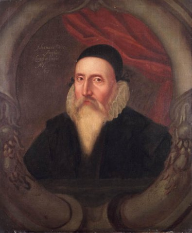
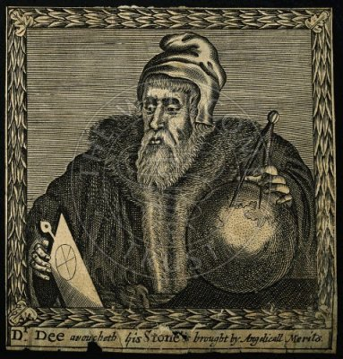
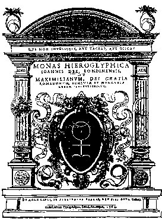
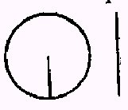
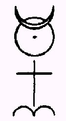
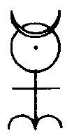
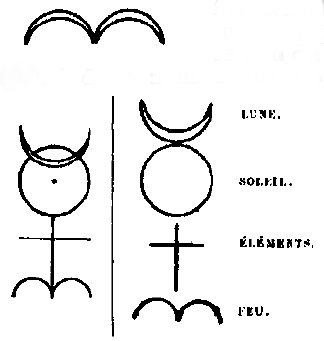
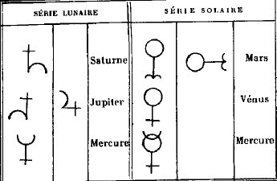
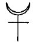

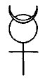
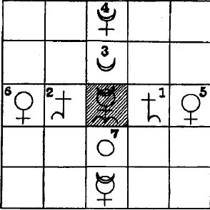
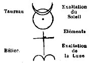
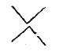
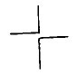
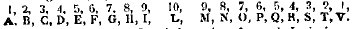
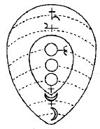
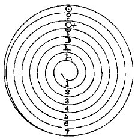
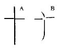
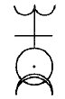
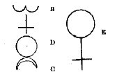
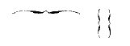
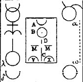
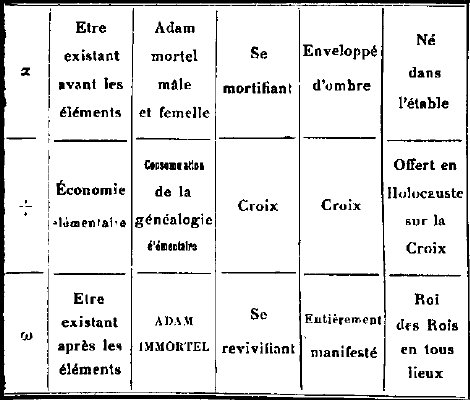
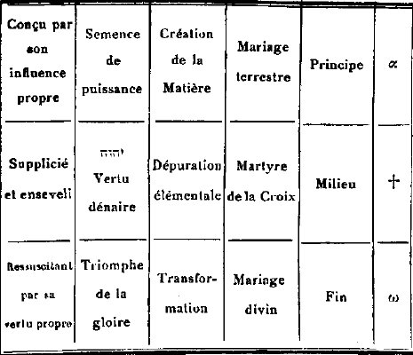
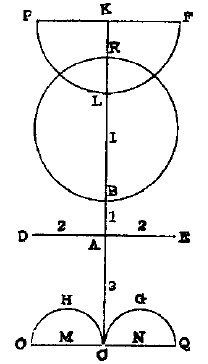
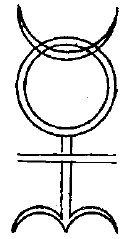
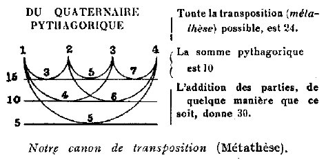
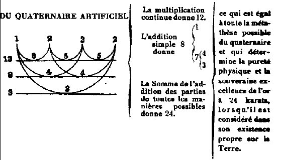
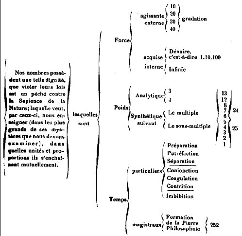
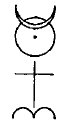
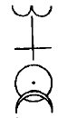
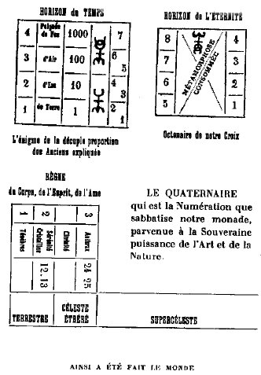
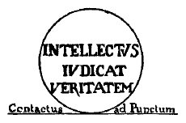
Noms cités
Fulcanelli · Paris · Hermes · Jean · Venus · Atalanta · Chevreul · Saturne · Jupiter · Bacon · Jung · Valentin · Basile · Newton